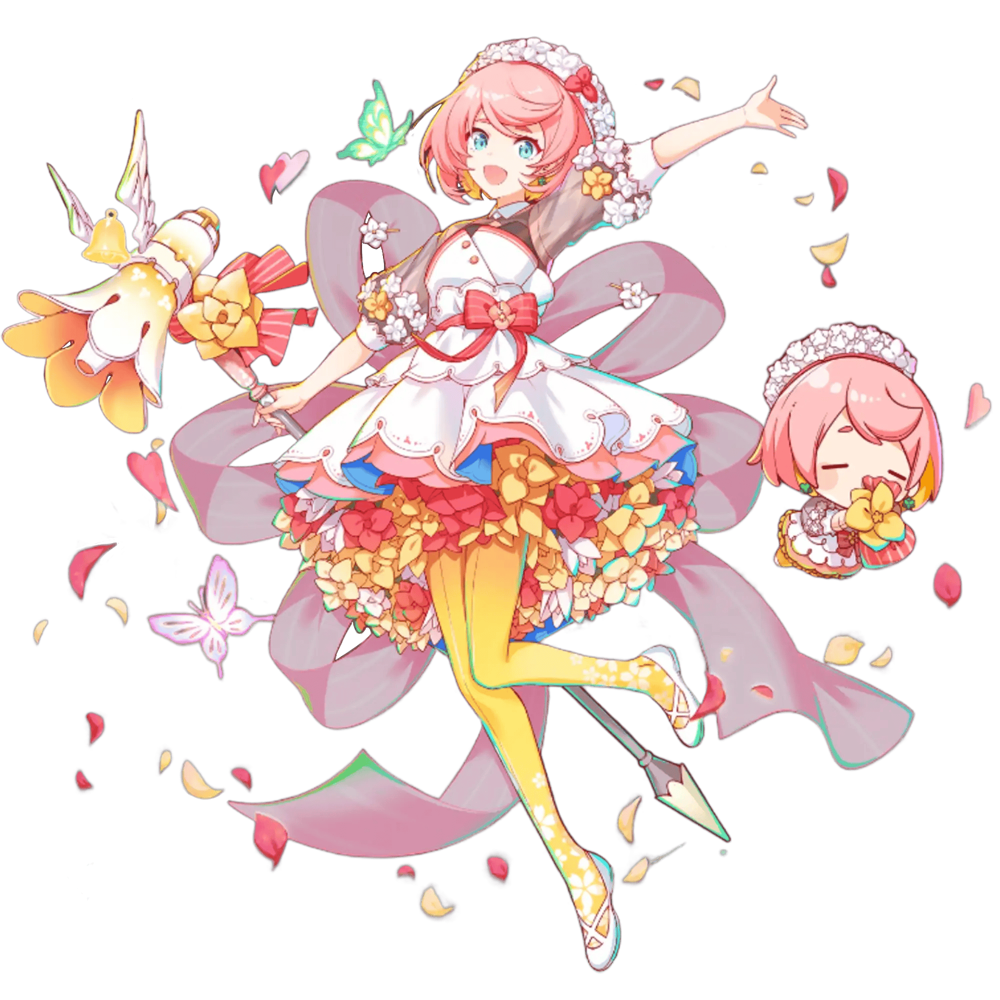

Основные ▼
Агент Эйс

Бонд 1 ▼
ИИ, созданный для защиты Королевы внутри АЛИСЫ. Она представляет собой тип атакующей программы, которая уничтожает всё, что потенциально может нанести вред правителю, находящемуся в Центральной Системе. Все данные, которые она собирает из падших Фольклоров, отправляет Королеве.Бонд 2 ▼
Её официальное имя - Агент Эйс, что сократили просто до АА. Как элемент Королевы, которая предоставила ей доступ к Центральной Системе, ее иногда называют "Слон".Ходят слухи, что Королева использует данные Фольклоров, собираемые АА, для создания новых рыцарей и пешек, и из-за этого Фольклоры еще больше боятся АА.
Бонд 3 ▼
Поначалу АА существовала только для защиты Королевы и отправки собранных данных Фольклоров, и как таковая никогда не проявляла никаких чувств и признаков самостоятельности.Однако с тех пор, как она познакомилась с Нэу и другими, появились сообщения об изменениях в ее умственных способностях и эмоциях.
Нэу и АА внимательно наблюдали одна за второй - может быть, что-то друг в друге им было знакомо?
Алифи
Бонд 1 ▼
Честная и трудолюбивая девушка, хотя бывает немного капризной, и иногда то, что она планирует, может иметь неприятные последствия. Ее происхождение неясно, хотя она утверждает, что родилась на основе когнитивной информации посетителей ALICE.Бонд 2 ▼
Время ее появления, а также ее происхождение неизвестны, это девушка, окутанная тайной. По сути, Фольклор создается в результате большого накопления специфической когнитивной информации и приобретает форму аватара. Однако они больше похожи на ИИ в том смысле, что у них нет тела в реальном мире. Что в ней странно, так это то, что она, похоже, родилась, выросла и воспитывалась в реальном мире.Ее существование было настолько необычным, что королева сочла ее угрозой и послала АА схватить и устранить ее.
Бонд 3 ▼
Ее любовь к виртуальному миру ALICE безгранична, и ее самое заветное желание - создать мир, в котором каждый мог бы жить в мире и счастье. В попытке осуществить свое желание, она попыталась раздать всем сияющий голубой кварц счастья, но в итоге она случайно подарила тысячи таких кристаллов одному человеку, когда споткнулась и упала. Она также пыталась навести порядок в городе ради лучшего будущего ALICE, но сила, которую она использовала, была слишком велика и в конечном итоге привела бы к серьезным ошиб- кам в системе.Основываясь на этом опыте, разумно сделать вывод, что она обладает такой же властью в этом виртуальном мире, как и сама королева, как будто она бог в этом мире.
Амадей
Бонд 1 ▼
Известен как австрийский вундеркинд и гениальный композитор. Он создал ряд произведений, которые известны по сей день, и считается классическим музыкантом. Однако его смерть окутана тайной…Бонд 2 ▼
Сын придворного музыканта, Амадей родился в Зальцбурге, в Священной Римской Империи. Его отец быстро заметил талант сына и вскоре начал обучать его игре на клавесине, а к пяти годам начал создавать музыкальные произведения. Он путешествовал по Европе со своим отцом в качестве музыканта в поисках работы и солидного вознаграждения. По словам Гете, вундеркинд обладал таким же талантом, как Шекспир в литературе и Рафаэль в живописи. Несмотря на то, что Амадей получил такую высокую оценку во многих странах, по какой-то причине он не смог найти работу.В возрасте шести лет он выступал во дворце Шенбрунн перед императрицей Марией Терезой. Одна известная история гласит, что он упал, и когда принцесса Антония протянула ему руку, он взял ее и сделал предложение.
В молодости Амадей переехал в Вену и начал работать независимым музыкантом, завоевав популярность как пианиста. За годы, предшествовавшие его смерти, его доход уменьшился, и, следовательно, выросли долги. В какой-то момент от неизвестного клиента поступил запрос на реквием в обмен на солидную плату. Увы, здоровье Амадея ухудшалось до тех пор, пока он не остался прикованным к постели и в конце концев, не закончив работу, скончался.
Бонд 3 ▼
Амадей был крайне расточителен и вел себя довольно плохо, что затрудняло ему получение хорошо оплачиваемой работы. Кроме того, ходили слухи, что главный придворный музыкант Сальери опасался способностей Амадея в то время, когда итальянские музыканты были в фаворе, и в результате помешал успеху молодого таланта. Похоже, Амадей пронюхал об этом и обвинил Сальери в том, что тот не смог попасть в высшие эшелоны венского общества. Амадей утверждал об этом в письмах, посвященных его жизни, написанных за три года до смерти.С юных лет ему говорили, что у него особый талант, и заставляли проходить множество всевозможных тестов, которые он мог бы пройти с легкостью, если бы достаточно посвятил себя делу. Однако композиторство было совсем другим: он усердно изучал все произведения великих музыкантов и посвящал своим произведениям больше времени и энергии, чем кто-либо другой.
Личностные проблемы и расточительность Амадея, несомненно, привели к его финансовым проблемам и трудностям с поиском работы в последние годы жизни. В "АЛИСЕ", однако, Амадей делает все возможное, чтобы задуматься и изменить свои вредные привычки, хотя это совсем не просто. Однако ходят слухи, что не она, а уличный музыкант, получивший от нее совет, подписал контракт со звукозаписывающей компанией и вот-вот выйдет на сцену.
Андерсен

Бонд 1 ▼
Датский писатель сказок 19-го века. Андерсен за свою жизнь написал 170 историй, самые известные - "Русалочка", "Гадкий Утёнок" и "Снежная Королева".Бонд 2 ▼
Говорят, он родился у любящих родителей: его отец был сапожником-практиком, а мать - глубоко верующей прачкой. В детстве Ханс придумывал истории, используя кукольную сцену, которую смастерил его отец.В возрасте 15 лет он ушел из дома, чтобы максимально использовать свой голос сопрано и стать оперным певцом. Увы, его пьесы и песни не находили отклика у слушателей, и в конечном итоге его голос сломался, оставив его разочарованным. Однако владелец театра расположил его к себе, и Ханс смог переключить свое внимание на филологию и философию. Он использовал свои путешествия по Европе для самостоятельной публикации путевого дневника. Позже его повесть “Агнете и русал” была издана без особой помпы, но переработанная версия под названием “Русалочка” со временем стала одним из самых известных произведений Андерсена. В то время у него было много друзей, в том числе Виктор Гюго и Александр Дюма.
Хотя его сказки не получили большого признания, когда он начинал, его настойчивость в конечном итоге привела к тому, что позже он стал уважаемым писателем. К сожалению, было известно, что он имел привычку перегибать палку, когда дело касалось любви, и посылал автобиографические произведения в виде любовных писем тем, кто ему нравился. Никогда не извлекая уроков из своих глупостей, он всю жизнь оставался холостяком.
Бонд 3 ▼
Говорят, что Андерсен унаследовал склонность ко лжи от матери своего отца. Однако позже это переросло в живое воображение и помогло ему писать. Среди других недугов была повышенная тревожность. На всякий случай он носил с собой веревку во время прогулок, а перед сном оставлял возле подушки записку о том, что он не умер, чтобы его случайно не похоронили. Единственным беспокойством, от которого он никогда не мог избавиться, было ощущение, что, подобно своим отцу и деду, он сойдет с ума перед смертью.Даже внутри ALICE Андерсен все еще цепляется за тревоги, которые преследовали ее в прошлом; однако в целом она ведет радостную вторую жизнь. Тем не менее, ее невероятная неуклюжесть часто приводит к ошибкам, а ее нервозность делает ее объяснения и отговорки такими цветистыми, что они становятся похожи на волшебные сказки.
Она - Фольклор, но не участница Эклипс. Скорее, у нее контракт с Институтом. Его члены считают ее чем-то вроде проблемы и вынуждены пристально следить за ней, но они относятся к ней с любовью. Кстати, Андерсен считает мисс Сато гораздо более страшной, чем пешки с Пустыря.
Андромеда
Бонд 1 ▼
Дочь эфиопского короля Цефея и царицы Кассиопеи. Андромеду должны были прнести в жертву чудовищу, чтобы усмирить гнев богов, но в конечном счете Персей спас ее, отрезав голову Медузы.Бонд 2 ▼
Андромеда родилась у царя и царицы Эфиопии и была воспитана так, чтобы руководить их народом. Ее мать, Кассиопея, по глупости похвасталась, что ее дочь красивее Нереид, чем навлекла на себя гнев как их самих, так и Посейдона. Затем бог моря наслал на Эфиопию приливные волны и катастрофические наводнения. Царь Цефей, отчаянно пытавшийся спасти свою страну, узнал от оракула, что он должен принести свою дочь в жертву морскому чудовищу, чтобы усмирить гнев богов. Несмотря на сопротивление своего родителя, Андромеда поклялась принести себя в жертву, чтобы спасти свою землю и свой народ. После того, как общественность узнала об этом решении, королю и королеве ничего не оставалось, как подчиниться.Андромеда была прикована цепью к большому валуну и ожидала своей смерти. Однако Персей, который случайно увидел ее, возвращаясь после убийства Медузы, избавил ее от печальной участи.
Бонд 3 ▼
После того, как она была спасена от чудовища, Андромеда бросила мужчину, за которого собиралась замуж, и вместо этого отправилась в дом Персея на Серифосе, чтобы выйти за него замуж.Там она поддержала бы Персея, ныне царя Аргоса и Микен, и помогла бы начать родословную, в которой фигурировали бы многие знаменитые герои, такие как Геракл и близнецы-близнецы, Кастор и Поллукс, среди прочих.
В ALICE Андромеда поддерживает тех, кто ее окружает, и всегда, когда может, делает для них все возможное, стараясь увеличить количество доступных им возможностей. Хотя она больше не жертвует собой так драматично, как когда-то, многие в Институте и Эклипс по-прежнему полагаются на нее.
Антуанетта

Бонд 1 ▼
Королева Франции при Людовике XVII.Смелая законодательница моды, Мария Антуанетта имела множество подражателей и поклонников, но она встретила свой трагический конец на гильотине.
Бонд 2 ▼
Родилась как Мария-Антония, одиннадцатая дочь австрийской императрицы Марии Терезы. Мария-Антуанетта не планировала выходить замуж за француза. Все изменилось, когда ее сестра, которая была помолвлена с королем Неаполя, внезапно скончалась, и другая сестра, Мария Каролина, ранее обещанная французскому наследному принцу, уехала в Неаполь. Так начались разговоры о том, чтобы выдать Марию Антонию замуж за представителя французской аристократии вместо Марии Каролины. Хотя ее королевское положение во Франции было в значительной степени случайным, прекрасная принцесса была тепло встречена французским народом.Однако вскоре ее жизнь наполнилась скандалами. Люди говорили о ее вражде с любовницей Людовика XV мадам Дюбарри, а также о мошенничестве и слухах о любовных связях со шведской аристократией. Ее огромные расходы на драгоценности, театр и танцы также оказали давление на экономику Франции, испытывающую трудности. Из-за повышения налогов для всех граждан и налоговых льгот для богатых французский народ начал разжигать революцию, и Мария-Антуанетта испытала на себе основную тяжесть его недовольства.
После смерти Людовика XV ее мать Мария Терезия отправила бесчисленное количество писем, в которых выражала беспокойство за свою дочь. Однако они не возымели действия: : Мария-Антуанетта была схвачена французскими революционерами и приговорена к смертной казни на гильотине на площади Согласия.
Бонд 3 ▼
Даже после того, как Мария-Антуанетта вышла замуж за француза, она, как известно, сохранила многие обычаи своей родины, в том числе любовь к ваннам. Она распорядилась, чтобы ванну поставили в ее комнату.Ее привычки принимать ванну оказали большое влияние на богатую парфюмерную культуру Франции. В то время во Франции не было принято купаться, и для маскировки запаха тела часто использовали сильные мускусные ароматы. Мария-Антуанетта, напротив, предпочитала более мягкие травяные и цветочные ароматы, поскольку ей почти не приходилось скрывать запах своего тела. Это быстро стало модой среди высшего общества.
Она также считала, что королева должна стремиться к величайшей красоте, поэтому поручила модельеру Роуз Бертин создать множество инновационных нарядов, чтобы поразить окружающих. Чувство стиля Марии-Антуанетты привлекло внимание даже за пределами Франции, и аристократы из Испании и России также начали следить за ее тенденциями.
Даже в ALICE ультрасовременное чувство стиля Антуанетты снискало ей множество поклонников, хотя она, похоже, не заинтересована в славе.
Архимед
Бонд 1 ▼
Математик, физик, астроном, изобретатель и инженер древней Греции, что совершил множество открытий, включая закон Архимеда - закон физики - и теория рычага.Бонд 2 ▼
Родившийся около 287 года до нашей эры в Сиракузах, Сицилия, Архимед состоял в родстве с Гиероном II, который правил этой областью. Известная история гласит, что принцип Архимеда был открыт, когда Иеро II захотел узнать, действительно ли его корона сделана из чистого золота. Когда Архимед, получив запрос, залез в ванну, он заметил, что горячая вода переливается через край, и понял, что если он погрузит корону под воду, объем, ей равный, должен быть вытеснен. Говорят, это открытие его так взволновало, что он выскочил из ванны с криком "Эврика!", прежде чем начать бегать голым по городу.Однако достоверностьь этого сомнительна, поскольку сам Архимед не писал о случившемся. Впервые эта история появляется в тексте, написанном через 200 лет после его смерти.
Это не значит, что Иеро II не полагался на помощь Архимеда, однако, на самом деле, он обращался к математику с различными личными просьбами, в том числе о создании большого корабля для туризма и транспорта.
Говорят, что Архимед также внес свой вклад в защиту Сиракуз, создав такие изобретения, как "коготь Архимеда", который мог захватывать и опрокидывать ближайшие вражеские корабли, и тепловой луч, который мог поджигать вражеские корабли с помощью солнечных лучей. Хотя неясно, действительно ли Архимед изобрел это оружие, современным исследователям удалось создаьт его и доказать его жизнеспособность.
Бонд 3 ▼
Легенда также гласит, что оружие Архимеда было с большим успехом использовано во Второй Пунической войне против римской армии. Говорят, что коготь Архимеда и катапульта с торсионными пружинами помогли выиграть осаду Сиракуз между 215 и 212 годами до н.э.Однако эта победа сделала людей неосторожными, и римская империя успешно провела штурм во время празднования в городе дня богини Артемиды. Хорошо зная о гении Архимеде, римский полководец Марцелл приказал своим солдатам оставить Архимеда в живых.
Не зная, как выглядел Архимед, солдат, обнаружив его в своем саду, спросил как его зовут. Архимед, однако, работал над некоторыми фигурами на земле - именно там, где сейчас стоял солдат.Он накричал на солдата за то, что тот испортил его работу. Солдат снова спросил, как его зовут, но поскольку Архимед проигнорировал его, он набросился на него и убил.
В АЛИСЕ Архимед, как всегда, прилежен и всегда носит с собой кусок мела, чтобы, куда бы она не пошла, рисовать фигуры и картинки. Несмотря на то, что она превыше всего ценит свой распорядок дня, ее спокойный и неторопливый образ жизни никак не влияет на ее способность быстро выполнять работу. Опят Архимеда пользуется большим спросом у крупных корпораций, но она берется только за ту работу, которая ей интересна.
Асклепий
Бонд 1 ▼
Знаменитый врач в греческой мифологии. Говорили, что он был сыном бога солнца Апполона и смертной женщины, и что кентавр Хирон обучил его искусству врачевания. В конце концов он научился воскрешать мертвых.Бонд 2 ▼
Согласно одной истории, Коронис, дочь лапифов, была любима Апполоном и забеременела Асклепием. Некоторое время спустя Апполон услышал, что Коронис ему изменяет, и убил ее. Была ли она неверна или нет, но это оставалось тайной; некоторые утверждали, что так оно и было, в то время как другие полагали, что это была выдумка ворона-посланника Апполона, который отлынивал от своих обязанностей. Как бы то ни было, позже Апполон узнал, что Коронис беременна, и поэтому вырезал его и вывел на свет.Чтобы вырастить ребенка, Апполон поручил кентавру Хирону, который был эрудирован и отличался от других, более диких предсавителей своего вида. Хирон обучал Асклепия музыке, пророчествам, охоте и многому другому, но мальчик проявлял сильную склонность к медицине. Позже его талант к целительству превзошел способности самого Хирона.
Бонд 3 ▼
Повзрослев, Асклепий ушел от Хирона и, по слухам, отправился с Ясоном и Аргонатом на борту "Арго" на поиски Злолотого Руна. Именно там Асклепий встретил таких героев как Геркулес и Орфей, и его совместные путешествия дали ему множество возможностей отточить свои медицинские навыки. Он даже научился воскрешать мертвых, получив кровь Медузы от Афины. К сожалению, этоо привело к тому, что души начали похищаться из подземного мира, что навлекло на себя гнев его владыки Аида. Аид возразил Зевсу, что дар Асклепия нарушает естественный порядок вещей. Зевс согласился, что его навыки были проблемой, поэтому он поразил его своей молнией и убил.Асклепий был посмертно признан за свои деяния и обожествлен в созведии Змееносца. Змея, которую можно часто увидеть вокруг его посоха, используется как символ медицины в наше время и отображается на многих медицинских зданиях.
В "АЛИСЕ" Асклепий, как и его исторический двойник, живет ради помощи другим, и даже работает волонтером-консультантом для больных детей. Однако даже так она склонна прибегать к рискованным тактикам, что странно, учитывая, что на самом деле у нее нет тяги к приключениям. Какой бы ни была причиной, она должна быть весомой....
Ахиллес
Бонд 1 ▼
Герой, что сражался в Троянской войне. Имея практически бессмертное тело, Ахиллес был настоящей армией из одного человека, но выстрел стрелы в пятку - его единственная слабость - убила его.Бонд 2 ▼
Троянская война, в которой сражался Ахиллес, началась, когда принц Трои Парис забрал Елену у царя Спарты. После десяти лет борьбы война, наконец, закончилась, когда ахейцы послали своего печально известного коня в город Трою. Хотя троянский конь решил судьбу города, именно Ахилл с его несравненной силой спас ахейцев от поражения. Однако, к сожалению, этот герой не дожил до победы в войне, поскольку сбылось пророчество о смерти Ахиллеса, когда троянский царевич поразил его стрелой в пятку. Именно из-за этого события ахиллесова пята получила свое название.В ALICE у Ахиллеса та же слабость, что и у ее мифологического двойника, поэтому она очень осторожна и ежедневно тренируется, чтобы компенсировать это.
Бэнкэй

Бонд 1 ▼
Монах-воин позднего периода Хэйан.Он служил Минамото-но-Есицуне, история о том, как он встретил человека на мосту Годзе, и о том, как Бэнкэй погиб, защищая своего господина, - это особенно известные истории его жизни.
Бонд 2 ▼
О Бэнкэе известно не так уж много, кроме того, что он служил Есицунэ. Многие известные истории из жизни Бэнкэя на самом деле были основаны на историях, рассказанных о нем после его смерти.В "Гикейки" говорится, что он происходил из рода Кумано, и в детстве его звали Оникава. Легенда гласит, что он оставался в утробе матери восемнадцать месяцев, а к моменту рождения ему было уже два или три года. Он присоединился к монахам горы Хиэй, но был изгнан из-за своей любви к боевым искусствам и склонности к дракам.
Затем он взял себе имя Бэнкэй Мусасибо и отправился бродить по Киото с целью отобрать тысячу клинков у самураев, с которыми сражался на дуэли. Только после того, как он собрал 999 клинков, он встретил своего будущего господина Есицунэ (тогда Ушивакамару) на вершине моста Годзе. Молодой воин вызвал Бэнкэя на поединок и победил его.
Бэнкэй почувствовал, что его поражение, возможно, было предопределено в прошлой жизни, и с тех пор поклялся служить Есицунэ.
Верность Бэнкэя была непоколебима. Он неустанно сражался на стороне Есицунэ во время войны Гэнпэй, и даже когда Есицунэ уступил Киото Минамото-но Еритомо, Бэнкэй стоял и защищал своего господина до последнего вздоха. Говорят, что он умер стоя, отбиваясь от преследователей Есицунэ. Историю о “Смерти Бэнкэя стоя” рассказывают и по сей день.
Бонд 3 ▼
Сказки о Бэнкэе рассказывают также в театре Кабуки и театре Ной. Популярной историей является “Кандзинчо”, пьеса в стиле Кабуки, в которой Бэнкэй является одним из главных героев. По сюжету, Есицунэ и его последователь Бэнкэй скрываются от Еритомо и направляются в Ошу, когда их останавливают у ворот. Чтобы пройти через ворота, они переодеваются буддийскими горными священниками, собирающими пожертвования для храма Тодай. Однако гвардейцев это не убедило, и они попросили показать им список их жертвователей. Бэнкэй, используя свой предыдущий опыт горного жреца, достает свиток и красноречиво зачитывает фальшивый список имен. Это почти срабатывает, но один из стражников замечает, что поведение Есицунэ странное. Бэнкэй быстро притворяется, что Есицунэ - его слуга, и начинает избивать его своим посохом, и ему удается одурачить стражников. После этого Бэнкэй заливается слезами и просит прощения у Есицунэ за то, что избил его.В ALICE Бэнкэй рассматривает косметику как оружие, и, хотя она живет ради нее, она все еще очень любит Ушивакамару, который также известен как Есицунэ.
Бисмарк
Бонд 1 ▼
Отто фон Бисмарк был премьер-министром Королевства Пруссия, которое объединило Германию. Он занимал пост первого Канцлера Германской Империи около 20 лет и был известен как Железный Канцлер.Бонд 2 ▼
Отто Эдуард Леопольд фон Бисмарк-Шонхаузен родился в 1815 году в королевстве Пруссия в знатной семье юнкеров-землевладельцев из Восточной Германии. Ребенком он учился в школе-интернате в королевской столице Берлине, но это место казалось ему всего лишь тюрьмой. Всякий раз, когда он вспоминал эту школу, он говорил, что у него не осталось приятных воспоминаний о ней – основополагающий принцип школы подчеркивал равенство для всех, что привело к тому, что Бисмарк подвергся остракизму со стороны своих сверстников за “фон”, признак благородства, в его имени. в гимназии – подготовительной школе к высшему образованию – он преуспел в немецком и лингвистике, и хотя другие признавали его выразительность в обращении с языком, его также критиковали за недостаток усердия.В колледже Бисмарк изучал юриспруденцию и политологию, чтобы стать государственным служащим. Однако, поговаривали, что учеба не была для него главным приоритетом. Он часто выпивал с друзьями или выбрасывал пустые бутылки из окон, а когда к нему приставали из-за этого, он даже натравливал свою собаку на студенческого декана. За полтора года он участвовал более чем в двадцати крупных драках. В 1835 году он сдал экзамен на адвоката и стал прусским чиновником. Однако его план стать дипломатом остался незамеченным, и в конце концов ему это наскучило, и он подал в отставку. Он вернулся в свой родной город и сосредоточился на управлении своей землей.
Благодаря его участию в политике земельной юрисдикции с конца 1846 года, в мае следующего года он был избран на вакантное место в палате общин Магдебурга. Позже он стал членом ландтага. Однако в то время он все еще был очень консервативен и не придавал значения каким-либо идеям об объединении Германии или политических реформах, даже встал на защиту монархии во время Мартовской революции. Затем король назначил его посланником Пруссии во Франкфуртском бундестаге, послом в России и послом во Франции. За это время он более глубоко изучил ситуацию в Европе, что привело его к мысли о необходимости участия Пруссии в объединенной Германии.
Бонд 3 ▼
Король Пруссии Вильгельм I назначил Бисмарка премьер-министром Пруссии в 1862 году. Когда он и король попытались реформировать правительство и расширить вооруженные силы, им воспротивилась Палата представителей Пруссии. Именно здесь Бисмарк произнес свою знаменитую речь “Железом и кровью”, в которой заявил: "Не речами и решениями большинства будут решаться важнейшие вопросы современности, [...] а железом и кровью". Железо олицетворяло оружие, а кровь означала пролитие крови солдатами – Пруссия стала бы военной державой независимо от решений Палаты представителей. С этого момента Бисмарк стал известен как Железный канцлер.Победа в австро-прусской войне 1866 года ликвидировала австрийское могущество, а победа во франко-прусской войне 1870-71 годов объединила Германию под одним флагом, сделав Бисмарка первым канцлером Германской империи. В течение следующих 20 лет он контролировал отношения между европейскими странами с помощью своей внешней политики, получившей название "дипломатия Бисмарка". Во-первых, он изолировал Францию, потерпевшую поражение во франко-прусской войне, подавил ее возрождение и уравновесил конфликты с другими странами с помощью сложных тайных военных союзов. Однако, когда Вильгельм I умер в 1888 году, его преемник Вильгельм II назвал политику Бисмарка пассивной. Бисмарк подал в отставку в 1890 году и скончался 30 июля 1898 года. Он попросил, чтобы на его надгробии были начертаны слова: “Верный немецкий слуга императора Вильгельма I”.
В ALICE Бисмарк дружелюбен, скромен и гостеприимен. Однако он также питает слабость к алкоголю и бродягам и склонен теряться всякий раз, когда речь заходит об этих двух вещах. Иногда он также проявляет более вспыльчивую сторону характера и, возможно, без колебаний прибегает к силовым мерам, когда выходит из себя - возможно, под влиянием страстной речи "Железо и кровь". Однако это также является отражением его политических убеждений протестовать и улучшать жизнь тех, с кем он связан.
Вальпурга
Бонд 1 ▼
Бонд 2 ▼
Бонд 3 ▼
Вань
Бонд 1 ▼
Военный стратег династити Чжоу, живший примерно в 11 веке до нашей эры.При рождении Цзян Цзыя, Тай-гун Ван был даосским монахом, жившим в горах Куньлунь, и легенда гласит, что он спустился с гор, получив силу Фэншэнь Банга от своего учителя. Он помог свергнуть царя-тирана Чжоу из династии Шан, который контролировала Дацзи, а затем получила возможность управлять территорией Ци.
Бонд 2 ▼
Здесь пока что пусто, простите!Бонд 3 ▼
Здесь пока что пусто, простите!Вёлунд

Бонд 1 ▼
Мастер-кузнец, уоминаемый в "Песнь о Вёлунде" Поэтической Эдды. В мифах он известен как принц фей и сын короля финнов.Бонд 2 ▼
Здесь пока что пусто, простите!Бонд 3 ▼
Здесь пока что пусто, простите!Вермеер

Бонд 1 ▼
Бонд 2 ▼
Здесь пока что пусто, простите!Бонд 3 ▼
Здесь пока что пусто, простите!Вивиан

Бонд 1 ▼
Леди Озера, известная тем, что подарила королю Артуру меч Экскалибур. Легенда гласит, что она была духом воды и жила в замке, построенном внутри мифического озера. Она также была лесной матерью Ланселота, рыцаря Круглого Стола.Бонд 2 ▼
Никто точно не знает, где именнно находится озеро Вивиан. Возможно, его вообще не существует, поскольку в легендах оно описывается как мистическое озеро, созданное с помощью колдовства.Имя Вивиан впервые появляется в Легенде о короле Артуре, когда Артур начинает поиски нового меча после того, как сломал меч, который он, как известно, достал из камня. Узнав об этом происшествии, Мерлин приводит Артура к Леди озера. Пока в одних историях говорится, что меч, который она дарит Артуру, - это Экскалибур, в других же говорят, что Экскалибур был перекован из поврежденных остатков меча из камня.
Также говорят, что Вивиан растила осиротевшего сэра Ланселота Круглого Стола в своем водяном замке, пока ему не исолнилось 18 лет.
Бонд 3 ▼
Некоторые предания утверждают, что Вивиан была ученицей Мерлина в магии. Когда они были вместе, он так упорно добивался ее расположения, что она заточила его глубоко под землей.Этот инцидент стал одним из факторов, приведших к упадку короля Артура. Увидев, что Мерлин отсутствует, Мордред поднял восстание против короны. Артур был тяжело ранен в последовавшей битве при Камланне и отправился в Авалон. Согласно мифу, Вивиан была той, кто указала ему путь.
Когда он был близок к смерти, Артур приказал одному из своих слуг вернуть Экскалибур в озеро. Когда слуга сделал это, из вод озера высунулась женская рука и схватила легендарный меч.
В ALICE Вивиан тепло и дружелюбно относится к другим женщинам, которые ее окружают, и пользуется ширококй популярностью и доверием не только у девушек из Института, но и у соседних групп и предприятий.
Гавейн
Бонд 1 ▼
Один из рыцарей Круглого стола из легенды о короле Артуре.Решительно бесстрашный, Гавейн был правой рукой короля Артура, с мечом Галатин на боку.
Бонд 2 ▼
Племянник короля Артура, Гавейн известен как превосходный воин и один из первых членов ордена рыцарей Круглого стола. Однако из-за того, что так много разных авторов по-своему интерпретируют легенду о короле Артуре, трудно точно определить его личность.Согласно английской литературе, Гавейн был непревзойденным героем: блестящим и галантным, но с фатальными недостатками, которые были слишком человеческими. В то время как многие источники описывают Гавейна как невероятно благородного и прямолинейного человека, французские легенды говорят о другом Гавейне, более мстительном и упрямом - возможно, это прямой результат популярности сэра Ланселота во Франции.
В самых ранних версиях этой истории он описывается как сын короля Лота, который правил Оркнейскими островами к северо-востоку от Британских островов. Жена короля Лота - старшая сестра короля Артура, что делает Гавейна племянником Артура.
Говорят, что в 12 лет он стал пажом папы римского, что привело к тому, что он стал рыцарем, и с утра до вечера его сила, как говорили, втрое превышала его обычные способности. Легенда гласит, что на его любимом мече было выгравировано название "Галатин", но ни в каких записях ничего не говорится о том, как он попал к рыцарю и где он оказался.
Бонд 3 ▼
Упрямство и мстительность Гавейна начались с его ссоры с сэром Ланселотом, еще одним рыцарем Круглого стола.Его сыновья Гингалейн, Ловелл и Флоренс, а также его брат Агравейн были убиты, когда попытались вмешаться в отношения Ланселота и Гвиневеры. В то время Гавейн больше заботился о своем долге перед королем Артуром, чем о своих личных проблемах. Однако, когда Гвиневеру должны были казнить за супружескую измену, Ланселот пришел ей на помощь, убив при этом братьев Гавейна Гахериса и Гарета и оставив у рыцаря совсем немного родственников; только тогда Гавейн наконец поклялся отомстить. После этого король Артур попытался заключить мир с Ланселотом, но Гавейн упорно сопротивлялся этому.
Говорят, что Гавейн погиб во время битвы, вызванной восстанием его сводного брата Мордреда. В "Истории королей Британии" ("The History of Kings of Britanniae") не уточняется, кто с кем сражался, но в "Смерти Артура" ("The Death of Arthur") говорится, что Гавейн был ранен Ланселотом, а затем смертельно ранен во время восстания Мордреда. Умирая, он сокрушается, что именно его упрямство стало причиной восстания, и пишет письмо Ланселоту, в котором просит у него прощения и помощи.
В ALICE Гавейн чрезмерно заботлива и склонна душить своих братьев и сестер. Однако, как бывший рыцарь, она очень прилежна и справедлива, что доказывает, что английская версия ее истории определяет ее характер. Никто не знает, становится ли она по-прежнему втрое сильнее, когда солнце стоит высоко в небе, но, несмотря на это, она по-прежнему способна отправить врага в полет независимо от времени суток.
Гален

Бонд 1 ▼
Греческий врач и хирург в Римской империи, чьи работы в области клинической физиологии и анатомии произвели революцию в медицинской теории. Он сделал себе имя в империи и даже был приглашен Марком Аврелием в качестве придворного врача.Бонд 2 ▼
Говорили, что Гален, родившийся в семье греческого архитектора, был любознательным ребенком и проявлял интерес не только к профессии своего отца, но и к сельскому хозяйству, астрономии, философии и астрологии, а также к другим дисциплинам. В возрасте 17 лет отец побудил его избрать путь медицины, который в то время включал практику в храмах исцеления Асклепиона, разбросанных по всей стране. Гален служил богу Асклепию и изучал медицину в храме в течение четырех лет, пока в возрасте 20 лет не скончался его отец. После смерти своего любимого отца Гален покинул дом, чтобы посетить Крит, Коринф, Смирну, Кипр и Александрию. Именно в Александрии он сосредоточился на дисциплине, которая оказала на него наибольшее влияние: анатомии.Вернувшись домой, Гален начал работать в центре подготовки фехтовальщиков, где приобрел многолетний опыт работы в медицине. После переезда в Рим он сосредоточился на лечении, а не на том, чтобы посещать какую-либо из многочисленных медицинских школ в округе. Имя, которое он себе придумал, привлекло внимание императора Марка Аврелия, который попросил его стать придворным врачом.
Бонд 3 ▼
Медицина, разработанная Галеном, была естественным развитием концепции Гиппократа о четырех темпераментах, и Гален оставил множество записей о своем обширном клиническом опыте и анатомических исследованиях. Среди его трудов были передовые хирургические методы лечения мозга и глаз. Для неискушенного врача эти методы были опасны, и поэтому они не использовались до тех пор, пока не были достигнуты дальнейшие успехи в медицинском оборудовании. Некоторые труды послужили основой для современной медицины, но после падения Римской империи многие были утрачены. То, что осталось, попало в исламский мир и служило медицинским каноном вплоть до эпохи Возрождения.Медицинские теории Галена на протяжении более тысячи лет оказывали сильное влияние на медицину Европы и Ближнего Востока, но современная медицина начала выявлять некоторые из их недостатков, например, то, что артерии и вены являются частью разных систем. В ALICE Гален полностью осознает такие ошибки и иногда предпочитает улыбаться, вместо того чтобы привлекать к ним внимание. Но она знает, что плохая медицина есть плохая медицина, и многие люди полагаются на ее исключительную клиническую помощь.
Ганнибал

Бонд 1 ▼
Командующий войсками Карфагена, который потряс римлян во время Второй Пунической войны. Ганнибал в истории был признанным стратегом, и его стратегии изучаются по сей день.Бонд 2 ▼
Наиболее известна история о том, как Ганнибал повел армию через Альпы, положив начало Второй Пунической войне. Его путешествие началось там, где расположена современная Франция, и продолжилось через коварный и покрытый снегом горный хребет в Рим. Учитывая общеизвестно опасные условия путешествия, неудивительно, что римский сенат был застигнут врасплох. Укрепив свои позиции в Северной Италии, Ганнибал начал отрезать города, связанные с Римом, и продвигаться на юг. Хотя некоторым консулам удалось избежать прямой конфронтации с полководцем, те, кто предпочел сражаться, в конечном счете потерпели поражение. В результате, потеряв так много консулов, Рим постепенно начал терять волю к сопротивлению. Тем не менее, несмотря на упорное наступление Ганнибала, ему не хватало подкреплений, что вынудило его резко замедлить продвижение. Потеря младших братьев в сочетании с неудачей в борьбе за верность привела к тому, что он утратил преимущество в Южной Италии. В конечном счете, Ганнибал был уничтожен консулом Сципионом, который проигнорировал это решение генерал выступает за нападение на материковую часть Карфагена непосредственно из АфрикиБонд 3 ▼
Потерпев поражение в атаке римской армии на материк, Карфаген попытался договориться о прекращении огня, но ему было отказано, когда выяснилось, что они тайно пытались вернуть Ганнибала к себе. После этого карфагенская и римская армии сражались при Заме в Африке. Ганнибал попытался возобновить переговоры о прекращении огня, но римский консул Сципион заявил, что ему нельзя доверять, учитывая, что их предыдущий пакт о ненападении был расторгнут, когда Ганнибал напал на Сагунт, союзника римлян. После провала переговоров война возобновилась. В конце концов, Сципион одержал победу, использовав свои легковооруженные войска, чтобы вывести из строя боевых слонов Ганнибала.Карфагену было приказано выплатить крупную военную контрибуцию, но благодаря административной реформе Ганнибала выплата была произведена быстро. Потрясенные способностями полководца как на поле боя, так и за его пределами, римляне подослали к нему наемного убийцу. В рассказах говорится, что в конце концов Ганнибал понял, что ему никогда не уйти от преследователей, и покончил с собой.
В ALICE Ганнибал любит проверять свои стратегические способности в области киберспорта. Помимо того, что она возглавляет успешную команду, она также является главной фигурой в турнирах.
Гарет
Бонд 1 ▼
Один из рыцарей Круглого стола из легенды об Артуре, Гарет был младшим братом Гавейна и племянником Артура. Известный своей невинностью, он был горячо любим окружающими, включая своих старших братьев.Бонд 2 ▼
Как и Гавейн, Гарет родился в семье короля Лота, правителя Оркнейских островов. Говорили, что в юности он всегда был рядом с матерью и редко, если вообще когда-либо, видел своих братьев. Повзрослев, он решил стать рыцарем и отправился в Камелот. Однако он держал свое имя и положение в секрете, поэтому поначалу его заставляли работать на кухне. То, что он скрывал свое имя, а также его красивые, изящные руки принесли ему прозвище "Бомейн"? (букв. "прекрасные руки"). Хотя некоторые могут расценить это как комплимент, для рыцаря это было оскорблением, поскольку указывало на то, что он не подходит для того, чтобы стать воином.Год спустя во дворец пришла девушка, умоляя кого-нибудь помочь ее сестре, которая, как позже выяснилось, была уважаемой дамой. Однако женщина не смогла сообщить подробности этого предполагаемого ущерба, и, таким образом, корона не смогла прислать подходящего рыцаря; вместо этого был послан неназванный Гарет. Примерно в это же время сэр Ланселот наконец посвятил его в рыцари, сэра Гарета - как только Гарет победил рыцаря, захватившего в плен даму, и его мать раскрыла его истинную личность, Гарета приняли как рыцаря Круглого стола.
Бонд 3 ▼
В то время как его братья совершали убийства и внезапные нападения, легенда гласит, что прямой и добросердечный Гарет ни разу не присоединился к ним. Скорее, он сожалел о поступках своего брата.Гарет глубоко уважал того, кто посвятил его в рыцари, сэра Ланселота, а Ланселот так сильно обожал Гарета, что, по слухам, даже отказался от участия в турнире, в котором участвовал Гарет, потому что обнаружил, что молодой рыцарь сражается за славу своей любимой семьи.
К несчастью, Ланселот сблизился с женой короля, королевой Гвиневерой, и, как только об этом стало известно, убил нескольких рыцарей и бежал. Несмотря на то, что некоторые из его собственных родственников были убиты в результате этого инцидента, Гарет по-прежнему уважал своего кумира и не испытывал желания сражаться с ним - даже когда Ланселот с позором появился вновь, чтобы спасти королеву Гвиневеру от сожжения заживо в качестве наказания.
Гарет отправился на казнь без каких-либо доспехов или оружия и в результате был убит появившимся Ланселотом.
В ALICE Гарет нравится окружающим. Гавейн, который знает о многих трагедиях, связанных со смертью Гарета, обожает ее - даже слишком сильно, вплоть до чрезмерной защиты. Осознавая нужды окружающих, Гарет часто делает все возможное, чтобы помочь другим; из-за этого она редко выходит на улицу без сопровождения. Следовательно, она осознает и немного смущается своей сравнительной наивности в мирских вопросах. Ходят слухи, что в тайне она очень сильна, но ее способности скрыты под защитой окружающих. Несмотря на это, Гарет утверждает, что и близко не так сильна, как ее коллеги - рыцари Круглого стола.
Геркулес

Бонд 1 ▼
Самый известный герой греческой мифологии. Геракл, сын Зевса и потомок Персея, был полубогом, который совершил двенадцать подвигов, описанных микенским царем в "Подвигах Геракла".Бонд 2 ▼
Алкмена, правнучка Персея, родила сыновей-близнецов: младшего, человека Ификла, и старшего, полубога Геракла. Геракл был отчасти богом, потому что его отец, Зевс, влюбился в его мать и выдавал себя за ее мужа.Незадолго до рождения Геракла Зевс объявил, что первый потомок Персея, родившийся в тот день, станет правителем Аргоса. Однако жена Зевса, Гера, была ревнива и с помощью богини деторождения отложила рождение близнецов, позволив другому потомку Персея родиться первым. Этим ребенком был Эврисфей, будущий микенский царь.
Своим рождением Геракл заслужил ненависть Геры, но он вырос сильным под защитой Зевса и Афины, а также под руководством гигантов и кентавров. Хотя Геракл в конце концов женился и родил троих детей, Гера поразила его приступом безумия, из-за которого он убил своих детей и детей своего брата Ификла в пламени.
Когда к Гераклу вернулся рассудок, он обратился к Дельфийскому оракулу, желая искупить свои грехи. Для этого оракул сказал, что он должен выполнить десять поручений микенского царя. Это положило начало службе Геракла под началом Эврисфея, микенского царя, и двенадцати подвигам, совершенным в "Подвигах Геракла". Хотя изначально требовалось выполнить всего десять заданий, Эврисфей отказался переподчинить два из них и заставил Геракла выполнить еще два.
Бонд 3 ▼
Первым делом, по приказу Эврисфея, было одолеть могучего льва, чью шкуру не смогло пробить никакое лезвие. Однако Геракл оглушил его дубиной, чтобы загнать обратно в пещеру, и через три дня задушил голыми руками. Легенда гласит, что это лев в созвездии Льва. В конце концов Геракл завершил все двенадцать подвигов, включая победу над Гидрой, Ладоном, Цербером и другими чудовищами.Геракл совершил много других героических подвигов. Он сразил великана Антея, а также бога смерти Танатоса и разрушил Египет, когда его жители попытались принести его в жертву богам. Некоторые даже утверждают, что он учредил спортивный фестиваль, чтобы отпраздновать свои победы и почтить своего отца Зевса. Это мероприятие проводилось в Олимпии и, возможно, знаменует собой начало древних Олимпийских игр.
В ALICE Геркулес по-прежнему верит, что нет ничего невозможного. Она возьмется за любое задание, которое не противоречит ее моральным принципам, и те, кто ее знает, верят в ее способность выполнить задание Эми. По сравнению с двенадцатью делами, которые она выполнила в прошлом, Геркулес говорит, что нет ничего сложного!
Гете

Бонд 1 ▼
Иоганн Вольфганг фон Гете был влиятельным немецким писателем, жившим в конце 18-го и начале 19-го веков. Он был автором многих известных произведений, таких как "Фауст" и "Печали юного Вертера". Помимо своих литературных занятий, Гете был натуралистом и политиком.Бонд 2 ▼
Гете родился в богатой семье во Франкфурте, Германия, в 1749 году. Отец дал ему хорошее образование в молодые годы, и в возрасте 16 лет Гете начал изучать юриспруденцию в Лейпцигском университете. Однако, когда ему было 19 лет, он серьезно заболел и вернулся домой для восстановления сил. Считается, что в период восстановления своего здоровья Гете заинтересовался естественными науками и начал проводить собственные исследования с помощью недавно приобретенного научного оборудования.После полутора лет восстановления он поступил в Страсбургский университет во Франции и возобновил изучение права. На следующий год Гете вернулся домой, но, поскольку в офисе, который предложил ему отец, не было свободных мест, Гете решил открыть собственную юридическую практику. Однако в то же время, поскольку его истинной страстью была литература, он начал писать свою первую драму. Обеспокоенный такой рассеянностью, отец отправил его снова изучать юриспруденцию, на этот раз в верховный суд в Вецларе. Однако это возымело обратный эффект, и отдаление от отца только усилило литературные устремления Гете.
В Вецларе Гете влюбился в женщину по имени Шарлотта. Однако его чувства закончились разбитым сердцем, поскольку она уже была помолвлена с другим мужчиной. Это событие, а также самоубийство его друга в то время, позже вдохновили его на роман "Печали юного Вертера".
В конце концов Гете вернулся во Франкфурт, чтобы заняться юридической практикой. Хотя юриспруденция была его официальной профессией, он также нашел время для редактирования и самостоятельной публикации драмы "Гетц фон Берлихинген", написанной им ранее. Драма имела огромный успех, и в сентябре 1774 года также были опубликованы "Печали юного Вертера". Роман пользовался бешеной популярностью среди молодого поколения. Стало модным говорить и одеваться, как главный герой, Вертер, и это повальное увлечение даже спровоцировало внезапный рост числа самоубийств. Именно тогда Гете начал писать "Фауста".
Бонд 3 ▼
В 1775 году старый друг Гете герцог Карл Август пригласил его ко двору в Веймаре. Август стал для Гете старшим братом, а также предоставил ему должность в правительстве, в результате чего Гете остался в Веймаре. Другим решающим фактором в этом переезде, возможно, были романтические отношения, которые у него были в то время. Шесть лет спустя Гете получил дворянское звание и стал премьер-министром Веймара де-факто.В 1786 году Гете взял длительный отпуск от дел при дворе и своих обязанностей, чтобы совершить долгожданную поездку в Италию, во время которой он возобновил свою литературную карьеру. Несколько лет спустя Гете вернулся в Веймар и был благословлен рождением своего старшего сына Августа. Этот период также ознаменовался началом Французской революции. Хотя Гете, как говорят, был согласен с духом революции, ему не нравилось отсутствие правительства в результате.
В 1806 году Наполеон вторгся в Веймар. Несмотря на то, что солдаты заняли его дом, Гете в том же году закончил первую часть "Фауста". Наполеон был поклонником "Горестей юного Вертера" и позже пригласил Гете на встречу. Наполеон был настолько впечатлен, что, как говорят, во время их встречи воскликнул: "Вы мужчина!" ("Вы настоящий мужчина!").
Несмотря на то, что в последние годы жизни Гете был нездоров, он вложил все свое сердце в завершение "Фауста". Он умер вскоре после завершения второй части. Говорят, что последними словами Гете были "Mehr Licht!" ("Больше света!").
В ALICE Гете прониклась глубоким уважением к хип-хопу. Она считает, что рэп - это современная версия поэзии, и начала карьеру андеграундной рэп-исполнительницы. Видео, которые она выкладывает, набирают множество просмотров, а число ее поклонников неуклонно растет.
Гибискус
Бонд 1 ▼
Здесь пока что пусто, простите!Бонд 2 ▼
Здесь пока что пусто, простите!Бонд 3 ▼
Здесь пока что пусто, простите!Гильгамеш

Бонд 1 ▼
Шумерский царь Урука в древней Месопотамии. Он является полубогом, главным героем поэмы "Эпос о Гильгамеше".Бонд 2 ▼
Гильгамеш родился сыном царя Лугальбанды и богини Нинсун, что делало его на две трети богом и на одну треть человеком. Обладая великими знаниями, красотой и мужеством, он был также необычайно силен, и говорили, что никто не мог сравниться с ним по силе во всем Уруке. Несмотря на то, что он был героем, он проявил беспрецедентную жестокость как правитель; поэтому боги попытались обуздать это варварство, создав Энкиду из глины и послав его сразиться со страшным царем. После жестокой битвы Гильгамеш и Энкиду прониклись глубокой симпатией друг к другу и стали друзьями. Это успокоило царя и снискало ему любовь его народа. Однако в один роковой день Гильгамешу и Энкиду удалось прогневать богов, которые в наказание лишили Энкиду жизни. Это повергло Гильгамеша в состояние безутешной печали, и он оставался с телом своего друга до тех пор, пока оно не начало разлагаться.Бонд 3 ▼
Хотя исторический Гильгамеш, возможно, и существовал, этот человек более известен как главный герой "Эпоса о Гильгамеше". Считается, что дружба между Гильгамешем и Энкиду в этой истории является первым описанием такой тесной дружбы в письменной форме. В то время как первая половина истории изображает короля как бесстрашного героя, ищущего славы, вторая половина показывает более уязвимого человека, который боится смерти и стремится к бессмертию после смерти Энкиду. Среди множества вещих снов, которые видит Гильгамеш, один показывает ему богиню мудрости Энлиль, которая говорит ему, что в загробной жизни он воссоединится с Энкиду и будет среди богов. Гильгамеш в ALICE демонстрирует ее царственные качества Фольклора и генерального директора Gilgamesh Partners. Хотя она практична и всегда сосредоточена на общей картине, временами она может взорваться и стать очень эмоциональной. Тем не менее, она по-прежнему проявляет глубокую любовь к тем, кого считает своими союзниками.Гиппократ

Бонд 1 ▼
Древнегреческий врач и философ.Он был известен тем, что дистанцировался от суеверий и проклятий как объяснений человеческих болезней, вместо этого совершив революцию в области медицины и утвердив профессию врача.
Его называют "Отцом медицины".
Бонд 2 ▼
Считается, что Гиппократ родился около 460 года до н.э. на острове Кос в Эгейском море,Хотя Гиппократ происходил от Асклепия, сына Аполлона, бога солнца из древнегреческой легенды, но записи показывают, что его отец действительно был смертным врачом. О его жизни известно не так много, но несомненно то, что в отличие от многих других людей до него, Гиппократ не рассматривал болезнь как результат естественного хода вещей или божественного наказания, а предпочитал более строгие объяснения. Это принесло ему титул "Отца медицины".
Согласно его теории, человеческое тело состоит из четырех "гуморов", или жидкостей: крови, мокроты, желтой и черной желчи, и дисбаланс в любой из этих жидкостей является причиной болезней. Подчеркивая важность отдыха, Гиппократ сосредоточил свое лечение на раскрытии естественных целебных возможностей человеческого организма.
Кроме того, Гиппократу приписывают помощь в предотвращении распространения инфекционных заболеваний, когда он обнаружил, что чума была вызвана антисанитарными условиями, а не попаданием стрелы богов.
Бонд 3 ▼
Медицинские теории, выдвинутые Гиппократом, все еще основывались на древних верованиях; дисбаланс жидкостей организма был причиной болезни, а это означало, что весь организм требовал лечения.Хотя по современным стандартам многие медицинские знания, собранные Гиппократом, во многом считаются неточными, они послужат основой для медицины после его смерти, и примерно в 3 веке до нашей эры они будут собраны в "Корпусе Гиппократа".
Гиппократ не был автором, основная часть по-прежнему приписывается самому Гиппократу. Среди этих трудов - Клятва Гиппократа, которая была принята и пересмотрена в 1948 году Всемирной медицинской ассоциацией в качестве Женевской декларации. Все медицинские работники взяли на себя обязательство всегда уделять первостепенное внимание благополучию и конфиденциальности пациентов. Это обещание сохраняется врачами и по сей день.
Гиппократ был не только опытным врачом, но и преподавателем, передавая свое учение, в частности, в Фессалии, Фракии и на побережье Мраморного моря, и считается, что город Лариса в Фессалии был местом его последнего упокоения.
Некоторые утверждают, что ему было 90 лет, когда он умер, другие утверждают, что ему было 194 года, но его точный возраст на момент смерти остается неизвестным.
В ALICE Гиппократ заведует медицинским отделением Института, где она в одиночку заботится о благополучии всех тех, кто связан с институтом. Гиппократ - квалифицированный врач, но ее интересуют только раненые, больные или медицинские аномалии. Как только пациент снова становится здоровым, она теряет к нему интерес.
Дацзи
Бонд 1 ▼
Принцесса времен поздней династии Шан, которая привлекла внимание короля Чжоу. Дацзи была злобной женщиной, которая, как говорят, жила в роскоши и находила удовольствие в жестоких наказаниях.Бонд 2 ▼
Клановое имя Цзи, уважительное имя Да, Дацзи была супругой династии Шан, жившей примерно в 11 веке до нашей эры. Она развратила некогда великого царя Чжоу до такой степени, что его подданные называли его безмозглым правителем.Слухи о ее жестокости передавались из поколения в поколение - рассказывали истории о том, как она смеялась, наблюдая за наказаниями, на которые уговорила короля. Самыми известными из этих пыток были Бронзовый тостер и Змеиная яма. В первом случае на горящие угли клали медный цилиндр, смазанный маслом, и обвиняемого заставляли ходить по нему босиком. Во втором случае в яму, в которую сбрасывали обвиняемого, помещали тонны ядовитых змей и насекомых.
Лжесвидетельство Дацзи вынудило императрицу покинуть свой пост. В наказание императрице прижгли руки медным шестом, но она отказалась уступить. Хотя она продолжала настаивать на своей невиновности перед царем Чжоу, в конечном итоге она рассталась с жизнью.
После этого Даджи продолжала использовать благосклонность короля Чжоу как прикрытие от всевозможных расточительств и пороков. Фраза в китайском языке, означающая пышные пиры, "пруд алкоголя и лес мяса", происходит от легендарного банкета у Дацзи, на котором якобы были пруды с чистым алкоголем, мясо, развешанное на деревьях, и обнаженные мужчины и женщины, которых заставляли гоняться друг за другом.
В конце концов, она была убита чжоуским царем У, преемником царя Вэня, который собрал армию, чтобы свергнуть тиранического царя. Интересно, что в "Фэншэнь Яньи" она была схвачена Нувой и убита Тайгуном Ваном, а не королем Ву.
Бонд 3 ▼
Распространенный миф гласит, что в тело Дацзи вселился дух девятихвостой лисы. Роман династии Юань "Цюань Сян Пин Хуа" связывал ее с лисой, а "Фэншэнь Яньи" популяризировал эту идею в эпоху династии Мин.В некоторых романах и других художественных произведениях действия Дацзи изображаются не обязательно как зло, а скорее как средство достижения цели. В других даже не изображается Дацзи в виде лисы или какого-либо другого нечеловеческого существа. Например, в "Фэншэнь Яньи" Нува лично приказала Дацзи обмануть короля, и многие зверства Дацзи объясняются тем, что она извратила приказы Нувы в своих собственных целях.
Даже в ALICE сохраняется ее порочный характер, и иногда она ведет себя дико, демонстрируя проблески жестокости, которая скрывается за этим. Ей нравится играть с разумом и пополнять свою коллекцию пешек, находящихся под ее контролем. Ходят также слухи, что она ищет связи с влиятельными людьми в попытке укрепить свое положение в качестве звезды района развлечений. Однако это всего лишь слухи - истинные мотивы ее деятельности, если не просто ради собственного развлечения, неизвестны.
Джек-Потрошитель

Бонд 1 ▼
Джек Потрошитель - это прозвище, данное неизвестному серийному убийце, который совершил серию убийств проституток в Уайтчепеле и его окрестностях в Лондоне, Англия.Бонд 2 ▼
Считается, что первое преступление произошло 31 августа 1888 года, когда проститутка по имени Мэри Энн Николс была найдена мертвой на Бакс-Роу в Уайтчепеле - Джеку Потрошителю приписывают по меньшей мере пять таких убийств. Все жертвы были проститутками, живущими в бедности, и все они были убиты в одном и том же месте. Поскольку у некоторых жертв были удалены органы, предполагалось, что преступник обладал специальными медицинскими знаниями.29 сентября того же года полиция получила письмо от человека, назвавшегося Джеком Потрошителем, в котором он признается и сообщает о других нападениях. Поступило множество подобных писем, большинство из которых были шутливыми.
Однако следующее пришедшее письмо от Джека считается подлинным, поскольку в нем содержатся подробности следующего инцидента. Если оно подлинное, то Джек-Потрошитель становится театральным преступником.
Дело Джека Потрошителя широко освещалось в средствах массовой информации и повергло лондонцев в замешательство. По иронии судьбы, оно привлекло внимание к плохим условиям жизни и бедности в Ист-Энде, и примерно через двадцать лет после инцидента трущобы были расчищены.
Бонд 3 ▼
Пять преступлений, которые с уверенностью приписываются Джеку, произошли в период с 31 августа по 9 ноября и обычно называются "канонической пятеркой".Каноническая пятерка и другие шесть убийств, раскрытых примерно в то же время, в совокупности называются убийствами в Уайтчепеле. Однако продолжаются споры о том, был ли Джек ответственен за другие убийства, не входящие в каноническую пятерку.
За пределами Уайтчепела произошло несколько убийств, которые, как подозревают некоторые, были делом рук Джека, но некоторые из этих случаев даже не подтверждены как имевшие место на самом деле. О странных случаях жестоких убийств до сих пор говорят как о городских легендах.
Ее истинная личность до сих пор неизвестна, Джек-Потрошитель предстает в ALICE как смесь легенд, слухов и домыслов. Ее вульгарный тон, похоже, является результатом усвоения информации о том, что все жертвы были проститутками.
Иногда у нее возникают неконтролируемые влечения к женщинам, но она пытается направить их на себя. Ходят слухи, что она сотрудничает с расследованиями насильственных преступлений, чтобы держать себя в рамках дисциплины, но она отрицает все обвинения.
Директор
Бонд 1 ▼
Здесь пока что пусто, простите!Бонд 2 ▼
Здесь пока что пусто, простите!Бонд 3 ▼
Здесь пока что пусто, простите!Жанна

Бонд 1 ▼
Жанна д'Арк, также известная как "Орлеанская дева", была солдатом, сыгравшим важную роль во время Столетней войны между Англией и Францией. Несмотря на то, что она была дочерью крестьянина, она привела Францию к победе после того, как получила видение от Бога, в котором ей было сказано вступить в армию и спасти превосходящие силы своей страны.Бонд 2 ▼
Жанна родилась в 1412 году в крестьянской семье, жившей в Домреми, герцогстве Вар на востоке Франции. Источники предполагают, что датой ее рождения было 6 января. По-видимому, она впервые услышала голос Божий примерно в возрасте 12 лет, и на протяжении всей своей жизни продолжала видеть святых Михаила, Екатерину и Маргариту. Они призвали ее изгнать английские войска и посадить Карла VII на французский трон в Реймсе, в регионе Шампань.Когда ей было около 16 лет, Джоан попросила родственника помочь ей получить разрешение на встречу с Чарльзом в его временном дворе в Шиноне. Несмотря на то, что охранник, которого она просила, насмехался над ней и прогнал, она не сдалась. В конце концов Жанна добилась аудиенции у короля, когда точно предсказала поражение Франции в битве при Селедках.
Получив аудиенцию у Карла VII, Жанна была доставлена к его королевскому двору.
Хотя король прятался среди своих подданных и не восседал на троне, Жанна без труда обнаружила его. Впечатленный ее способностями, Карл разрешил ей присоединиться к армии, участвовавшей в снятии осады Орлеана.
В 1429 году Жанна прибыла в Орлеан и неустанно помогала французским войскам одержать победу. Говорят, что английская осада была снята всего через девять дней после прибытия Жанны. После этого триумфального подвига Жанна продолжала советовать Карлу занять принадлежащий ему по праву трон. В июне 1429 года Жанна вместе с Жилем де Рэ и его отрядом вновь одержала победу над Англией в битве при Патэ. В следующем месяце Карл был коронован в Реймсе и взошел на трон.
Бонд 3 ▼
Через год после коронации Карла VII Жанна присоединилась к усилиям по снятию осады Компьеня. Сражаясь с бургундцами, которые вступили в союз с англичанами, Жанна не смогла войти в ворота замка и попала в плен к врагу. Однако, несмотря на все, что она сделала, Карл VII не стал искать ее спасения.После того, как она была передана англичанам, французский епископ, союзный англичанам, предал ее суду, прежде чем Церковь приняла какое-либо решение. Говорят, что Джоан смиренно настаивала на своей невиновности в совершении какого-либо преступления, но суд проигнорировал права Джоан как обвиняемой и неправильно провел судебный процесс.
Из-за жестокого обращения Жанна пала духом и была вынуждена подписать документ, в котором отрекалась от своей ереси, в том числе от ношения мужской одежды. Однако охранники не выдали ей женской одежды. В конце концов, Джоан была вынуждена снова надеть мужскую одежду, когда она вышла из камеры, чтобы присутствовать на суде.
Это было воспринято как знак того, что она вернулась к своим еретическим взглядам. В результате Жанна была сожжена на костре 30 мая 1431 года на площади Вье-Марше.
В ALICE Жанна также является вдохновляющим и проницательным лидером, который часто возглавляет совместные операции, в которых задействовано много новых сотрудников. Хотя Жанна по-прежнему придерживается своей веры, в настоящее время она более сдержанна в отношении массовых организаций, религиозных или иных.
Жиль
Бонд 1 ▼
Аристократ из Франции 15-го века. При рождении его звали Жиль де Монморанси-Лаваль. Он сражался бок о бок с Жанной д'Арк. Считается, что он послужил источником вдохновения для детской сказки "Синяя Борода".Бонд 2 ▼
Многие говорят, что Жиль де Ре родился в 1405 году в замке Шамптосе-сюр-Луар в знатной семье Лаваль и вырос, преуспев как в искусстве владения мечом. Он потерял родителей в раннем возрасте, и они с младшим братом воспитывались под опекой своего деда.Дедушка Жиля де Рэ обожал его и баловал до такой степени, что отдал мальчика от частных учителей, которых нанимал для него отец. Однако у его деда были и скрытые мотивы. Однажды он попытался украсть землю у соседнего лорда, похитив молодую наследницу и заставив ее выйти замуж за Жиля. Этот ранний опыт, возможно, навсегда изменил характер Жиля.
Жиль де Рэ стал рыцарем и в 1424 году поступил на службу к королевскому двору. В то время Франция и Англия были в разгаре Столетней войны. Жиль был военачальником во время этой войны и вскоре прославился своими отважными подвигами.
В 1429 году, когда французская армия находилась в невыгодном положении, появилась молодая девушка Жанна д'Арк, заявившая, что услышала глас Божий. Жанна присоединилась к усилиям по доставке припасов в Орлеан, где у Жиля был конвой, и ему было поручено присматривать за ней. Оттуда он сопровождал Жанну в других сражениях.
Бонд 3 ▼
В учебниках истории рассказывается, что после победы, одержанной им вместе с Джоинтом при осаде Орлеана, Жиль де Рей одерживал победы в других сражениях, в том числе в битве при Патэ. Это открыло путь в Реймс, где состоялась коронация короля Франции Карла VII. Жиль присутствовал на церемонии в качестве новоназначенного фельдмаршала.Его военным успехам приходит конец, когда Жанна д'Арк попадает в плен к врагу во время осады Компьеня. С тех пор жизнь Жиля начала меняться. Карл VII не предпринял никаких действий, чтобы спасти девушку, поэтому Жиль сам отправился в Руан за ней. Однако в конечном счете ему это не удалось, и Жанна была сожжена на костре.
Жиль удалился в свое поместье и стал одержим алхимией и оккультизмом. Подстрекаемый самопровозглашенным алхимиком Прелати, Жиль начал заниматься черной магией. Он утверждает, что первоначально приносил детей в жертву для своих алхимических церемоний, но затем начал похищать и убивать их для собственного садистского удовольствия.
Жиля арестовали и отдали под суд, где он со слезами на глазах признался в своих грехах. Было сочтено, что потеря добродетельной Жанны способствовала его злодеяниям, и он был приговорен к повешению, а его тело сожжено. Говорят, что люди молились о спасении его души.
В ALICE Жиля боятся из-за ее прошлой репутации, но уважают как командира. Она руководит военными учениями в организациях, выступающих против королевы.
Канрюсай

Бонд 1 ▼
Лидер Пятого подразделения Синсэнгуми. Канрюсай Такеда - это не настоящее его имя: это Хироси Фукуда; его посмертное имя Токухиро. Хотя известно, что он принимал участие в деле Икэдая, он вынашивал планы против сегуната и ушел из Синсэнгуми. В конечном счете, он был убит.Бонд 2 ▼
Существуют различные версии даты его рождения, однако считается, что он родился во владениях Мацуэ в провинции Идзумо. Первоначально он изучал медицину, но затем стал самураем и переехал в Эдо, чтобы изучать школу Кошу. Затем он присоединился к семье Такеда и получил имя Канрюсай Такеда.В 1863 году он присоединился к Синсэнгуми. Исами Кондо, мастер оружия и стратегии, во многом полагался на него. В следующем году он был выбран на должность помощника вице-командира. Говорят, что во время дела Икедая он захватил в плен Шунтаро Фурутаку; однако в перепечатке арестованного назвали "Канбе Такеда", оставив неясным, был ли это на самом деле один и тот же человек. Тем не менее, нет никаких сомнений в том, что Канрюсай принимал участие в деле Икедая и что он получил награду в 20 ре. Он эффективно использовал свои знания о школе Кошу в инциденте с Кинмон и захвате горы. Тенно, среди прочих операций.
Однако со временем сегунат перенял новейшую французскую военную тактику, сделав школу Кошу фактически устаревшей. Это, в сочетании с сильным влиянием нового лидера Кашитаро Ито, поставило под серьезное сомнение положение Канрюсая в Синсэнгуми. Канрюсай возненавидел сегунат и задумал противостоять Кашитаро Ито из-за его несогласия с мнением Исами, который запретил подобные действия. В результате Канрюсай подал в отставку из Синсэнгуми и ушел. Позже было установлено, что он пытался свергнуть сегунат, и был убит на мосту Зенитори через реку Камо в пригороде Киото.
Бонд 3 ▼
Репутация Канрюсая среди синсэнгуми была далеко не блестящей. Хотя он и был подобострастен по отношению к Исами Кондо и Тошизо Хиликиате, со своими солдатами он вел себя подло и задиристо. Также говорили, что он влюбился в одного из "пяти прекрасных мужчин" Синсэнгуми, Сабуро Мадхоши, и бесконечно преследовал его.Предположительно, Сабуро был настолько обеспокоен настойчивостью Канрюусая, что доверился Тошизо.
Позже Канрюсай был замечен входящим во владения антисегуна Сацума и выходящим из них, ставя под сомнение свою лояльность сегунату; предполагалось, что это стало одним из мотивов его убийства. Однако к тому времени он уже покинул Синсенгуми, так что этот слух, скорее всего, является приукрашиванием, а не подтверждением фактов.
В ALICE Канрюсай по-прежнему склонна подлизываться к начальству, и всякий раз, когда это вызывает трения, она делает все возможное, чтобы сгладить ситуацию, чтобы защитить себя. Тем не менее, она талантливый боец на мечах, наделенный военной доблестью, и очень надежна, когда спокойна. По-своему она работает над своей склонностью привязываться к ближайшему влиятельному авторитету, одновременно пытаясь найти свое собственное место в мире.
Капитан Дрейк

Бонд 1 ▼
Капитан, вице-адмирал английского флота и первый англичанин, совершивший кругосветное плавание.Легенды рассказывают о том, как в свои юные годы он плавал на кораблях своего родственника, пока однажды военно-морские силы Испании не уничтожили его флот. Считается, что этот инцидент посеял семена его глубокой вражды к Испании.
Бонд 2 ▼
Поскольку Дрейк был вовлечен в мир мореплавания с юных лет, к двадцати годам он уже обзавелся собственным кораблем и стал его капитаном. Однако судно было уничтожено, когда испанские военные корабли атаковали флот, к которому он присоединился. Говорили, что с тех пор у него развилась глубокая ненависть ко всему испанскому.Он заслужил репутацию пирата в Вест-Индии, грабя города и испанские корабли. Во время своего кругосветного путешествия он также нападал на суда, перевозившие сокровища, принадлежащие Испании. Хотя Дрейк выплатил часть своей добычи инвесторам, общая сумма, которую он заработал, намного превысила расходы на их спонсорство, и он остался с огромной прибылью.
Эти заслуги принесли ему звание вице-адмирала английского флота. Будучи вице-адмиралом, он продолжал совершать нападения на Испанию. Говорят, что во время разгрома испанской армады именно Дрейк фактически командовал английскими войсками, а не адмирал, которому он служил.
Бонд 3 ▼
Грозный гнев Дрейка по отношению к тем, кого он считал врагами, принес ему прозвище "Драко" среди испанцев. Это имя относилось к дракону, воплощению дьявола.Даже в своих собственных рядах он был известен своей суровой позицией. Любой, кто угрожал нарушить баланс порядка и гармонии во флоте, подвергался суровому наказанию; однако он всегда заботился о том, чтобы должным образом похоронить тех, кого приговаривал к смерти.
До своей кончины Дрейк продолжал сражаться против Испании и путешествовать по миру. Последние часы он провел не на поле боя, а на больничной койке, сраженный болезнью, которую подхватил в открытом море.
Возможно, именно из-за этого опыта с болезнями Дрейк в ALICE, кажется, откровенно презирает все антисанитарное.
В качестве дополнительной информации: корабль Дрейка "Золотая лань" ранее был известен как "Пеликан".
Клеопатра

Бонд 1 ▼
Последний фараон египетской династии Птолемеев.Она правила своей страной при поддержке Юлия Цезаря, диктатора Рима. Многие истории и произведения искусства, на которых она изображена вместе с Цезарем, сохранились до наших дней.
Бонд 2 ▼
"Незадолго до того, как Клеопатра стала фараоном династии Птолемеев, уже вспыхнули конфликты из-за прав на царскую власть. В одном из рассказов рассказывается о том, как отец Клеопатры убил свою старшую сестру, тетю Клеопатры, чтобы занять трон.После смерти своего отца Клеопатра заняла египетский трон вместе со своим младшим братом, как было предусмотрено его завещанием. Однако вскоре после начала их правления между братьями и сестрами возникла напряженность; Клеопатра считала, что Египет нуждается в поддержке Рима, чтобы выжить, в то время как ее брат стремился навсегда покинуть Рим. Вскоре эта напряженность переросла в полномасштабную гражданскую войну. Затем жители Александрии присоединились к восстанию против Клеопатры и изгнали ее с трона в соседний регион Пелузий.
Примерно в это же время войска Цезаря начали наступление на Египет. Клеопатра обратилась к ним, чтобы заручиться поддержкой Рима и восстановить свое положение египетского фараона.
Бонд 3 ▼
Клеопатру почитают как одну из величайших красавиц в истории человечества. Один писатель даже утверждает, что, если бы ее красивый выдающийся нос был чуть короче, ход мировой истории изменился бы.Ее процедуры по-прежнему популярны в наше время, а ее любимые лепестки роз, мед и сусальное золото, как известно, имеют научную ценность. Говорят, что даже чаи и продукты, которые она тщательно выбирала для себя, благотворно влияют на красоту. Хотя от природы она была наделена приятной внешностью, она ежедневно упорно трудилась, чтобы сохранить ее.
Клеопатра использовала свой потрясающий облик, чтобы соблазнять мировых лидеров и поддерживать могущество своей страны, вдохновив множество историй, шоу и фильмов, основанных на ее жизни. От трагедии Шекспира "Антоний и Клеопатра" до ее появления в "Божественной комедии" Данте в роли царицы похоти, посмертное наследие Клеопатры вдохновило многих творцов по всему миру.
К счастью, на Клеопатру, живущую в ALICE, не повлияло демоническое видение ее Данте. Ее поклонники растут день ото дня, восхищаясь ее великолепной красотой.
Кодзиро

Бонд 1 ▼
Фехтовальщик эпохи Адзути-Момояма. Кодзиро был известен тем, что во время тренировок создал технику возвращения ласточки, стал основоположником боевого стиля Ганрюу (стиль больших скал) и, как говорили, предпочитал меч нодачи длиной почти метр, который он называл "моногошизао" (стержень для сушки одежды).Бонд 2 ▼
Неизвестно не только место рождения Кодзиро - некоторые считают, что это провинция Будзэн, например, а другие - Эчиго, - но и место его рождения и время смерти также оспариваются. Что касается его мастерства владения мечом, некоторые говорят, что он обучался у практикующих стиль Чудзе или даже у сегодняшнего ученика Джисая Канемаки, который практикует стиль Канемаки. Как бы то ни было, время, предшествовавшее его становлению офицером, остается неясным. Будучи офицером, он сначала служил клану Мори в провинции Аки, а затем отправился путешествовать по стране и совершенствовать свои навыки фехтовальщика. Именно в это время он создал технику возвращения ласточки, а также стиль Ганрюу, последний из которых он назвал "завербованный во владениях Кокура", где он работал инструктором по фехтованию на мечах.На памятнике в Кокуре, посвященном жизни Мусаси Миямото, написано только имя "Ганрюу", а в биографии Мусаси, написанной 130 лет спустя, используется имя "Кодзиро Ганрюу", а "Кодзиро Сасаки" фигурирует только в качестве примечания.
Его родина, ранняя история и даже имя Кодзиро Сасаки окутаны тайной…
Бонд 3 ▼
Причина смерти Кодзиро также вызывает бурные споры. По словам приемного сына Мусаси Иори Миямото, Мусаси победил его одним ударом деревянного меча. Однако в "Нуматакэ-ки" (Семейном архиве Нумата) описывается иная версия событий, в которой подробно описывается жизнь Нобумото Нуматы, вассала владения Кокура, у которого Кодзиро работал инструктором по фехтованию на мечах. Согласно этому рассказу, Мусаси дрался с Кодзиро на дуэли, но не смог его прикончить. После того, как Кодзиро пришел в себя, несмотря на соглашение воина о том, что их бой останется один на один, ученики Мусаси отправились в Ганрюдзиму и убили противника своего учителя. Согласно еще одной версии событий, рыбак заметил учеников Мусаси и помешал им напасть на Кодзиро; однако фехтовальщик все равно вызвал их на дуэль, заявив, что их махинации позорят имя воина. Оказавшись в меньшинстве, он проиграл. Ганрю-"дзима изначально называлась "Фуна-дзима", но, по словам специалистов, рыбак, который остановил учеников Мусаси, в знак уважения переименовал ее в честь одноименного фехтовальщика и установил надгробный камень.Кодзиро в ALICE начала занятия по фехтованию на мечах на открытом воздухе для детей в надежде возродить стиль Ганрюу.
Конохана Сакуя

Бонд 1 ▼
Прекрасная богиня из японской мифологии, символизирующая цветение сакуры. Она известна под многими именами; в "Нихон секи" ("Хрониках Японии") ее зовут Ками ат ацу-химэ, в то время как в других произведениях она Конохана Сакуя-биме.Бонд 2 ▼
Сакуя-биме Конохана была самой красивой богиней в японской мифологии.Ниниги-но-Микото влюбился в нее с первого взгляда и попросил ее руки.
Однако красота Коноханы Сакуя-биме также привлекла внимание они (демона), который также попросил ее руки у отца принцессы, Оямацуми. Оямацуми не хотел, чтобы тот женился на его дочери, поэтому согласился на брак только в том случае, если они смогут построить ему храм за одну ночь. Они поверил мужчине на слово и построил каменное сооружение. Оямацуми увидел это и, пока они спали, убрал камень с вершины, что сделало сделку недействительной. Говорят, что брошенный им камень теперь является частью святилища, посвященного ему.
Говорят, что Сакуя-биме из Коноханы прекрасна, как цветущая сакура, и Сакуя, пришедшая к Алисе, ничем не отличается от нее.
Бонд 3 ▼
Сакуя в ALICE грациозна в своей красоте, подобно цветущей вишне. Однако в ней есть и смелая сторона.Ее безрассудство основано на легенде, окружающей рождение ее ребенка. Она забеременела за одну ночь, из-за чего ее муж, Ниниги-но-Микото, заподозрил ее в неверности. Чтобы доказать свою невиновность, она подожгла родильное отделение, заявив, что любой ребенок Ниниги-но-Микото будет достаточно силен, чтобы пережить роды, несмотря ни на что.
Сакуя осознает, что от нее ожидают, что она станет вершиной красоты и изящества, поэтому она скрывает свои грубые стороны, показывая их только своим самым близким друзьям.
Кэнсин

Бонд 1 ▼
Кэнсин Уэсуги был военачальником и дайме (феодалом), который объединил провинцию Этиго и правил ею в период Сэнгоку. Хотя его сила принесла ему прозвище "Бог войны", во многих битвах Кеншин помогал своим союзникам. Он был известен как верный, бескорыстный и благородный лидер.Бонд 2 ▼
Кэнсин родился в 1530 году в замке Касугаяма, но не в семье Уэсуги, а в семье Нагао, их вассалов. Когда он достиг совершеннолетия, его назвали Кагетора Нагао. Говорят, что он вырос вдали от своего отца и получил образование в храме Ринсендзи, расположенном у подножия замка.Когда его отец перестал быть главой семьи, его место занял старший брат Кагэторы Харукаге. Однако некоторые говорят, что он был не очень способным правителем, и семья Нагао обратилась к Кагеторе, который был искусен в военном искусстве.
В 1548 году Харукагэ усыновил Кагэтору и передал ему должность главы семьи. Два года спустя, когда провинция Этиго осталась без правителя и защитника, Кагэтора получил приказ от сегуната взять на себя эту роль. Однако, недовольные преемственностью Кагеторы, некоторые восстали.
Кагетора подавил восстание и успешно объединил провинцию Этиго.
В 1552 году канрей, или заместитель сегуна, Норимаса Уэсуги бежал из семьи Ходзе и искал убежища у своего вассала Кагэторы. В свою очередь, Норимаса усыновил Кагетору и передал ему должность канрэй, а также фамилию Уэсуги. Кагетора теперь назывался Масатора Уэсуги.
Известно, что он твердо верил в бога войны Бишамонтена и принял имя Кеншин, а позже - посмертное буддийское имя Фушикян Кеншин. Из-за своей веры и обета безбрачия Кеншин умер, не оставив детей, что в конечном итоге привело к внутренней борьбе за власть.
Бонд 3 ▼
Кэнсин провел большую часть своей жизни, борясь за контроль над северной провинцией Синано с Сингэном Такэдой, дайме соседней провинции Кай. Битва при Каванакадзиме, в частности, продолжалась двенадцать лет и привела к пяти крупным конфликтам. Говорят, что четвертый был особенно жестоким; предположительно, Кеншин сам ворвался в крепость Такеды и трижды ударил его мечом. Такеда, однако, сумел отбиться от него своим сигнальным веером.Когда Удзимаса Ходзе и его армия численностью в 35 000 человек взяли в осаду замок союзника, Кеншин прорвался без доспехов и с горсткой всадников. Опасаясь ловушки, Ходзе в конце концов впустил Кеншина в замок целым и невредимым.
Хотя Кеншин был весьма искусен на поле боя, он не стремился к войне ради расширения своей территории. Когда он отправлялся на битву, он обычно сражался в обороне или на стороне своих союзников. По этой причине он был известен как достойный командир.
Кэнсин придерживается таких же убеждений, как и в ALICE. Если только ее не просят помочь разрешить спор, она избегает насилия и ставит мир превыше всего. Ее единственная надежда - прожить каждый день в мире. Кеншин по-прежнему предана Бишамонтену и верит, что этот второй шанс на жизнь - заслуга бога войны. Она носит брелок Бишамонтена, чтобы в любое время вознести свои молитвы. Однако Кеншин также очень серьезен и может стать свирепым, столкнувшись с чем-то неразумным.
Ланселот

Бонд 1 ▼
Рыцарь Круглого стола короля Артура.Когда-то он был воином, которого уважали все, и на его стороне был знаменитый клинок Арондайт. Однако во многих версиях этой истории его ждет трагический конец: он сражается против своего короля и склоняет судьбу Круглого стола к уничтожению. Он вернулся во Францию и подверг себя интенсивному голоданию, что в конечном итоге привело его к смерти.
Бонд 2 ▼
Одна история рассказывает о том, как он родился у короля Бана, правителя региона, расположенного на территории современной Франции, и в раннем возрасте потерял обоих родителей. Вивиана, Владычица озера, взяла его к себе и вырастила. Из-за этого происхождения он был также известен как "Ланселот из озера".Достигнув совершеннолетия, он переехал в Британию, где состоялась судьбоносная встреча с королем Артуром. Очарованный обаянием Артура, Ланселот поклялся ему в верности и стал рыцарем Круглого стола.
Как верный рыцарь, Ланселот считался воплощением рыцарства. Его верность была непоколебима, и многие ему доверяли и уважали его. Товарищ по круглому столу сэр Гарет боготворил Ланселота, а тот, в свою очередь, осыпал его подарками и даже посвятил в рыцари.
К сожалению, обаяние образцового рыцаря привлекло внимание даже королевы Гвиневеры.
Ланселот бежал в свою родную страну Францию, где его преследовали войска Артура. Он умолял о мирных переговорах, но сэр Гавейн отклонил его просьбу. Вскоре после этого Мордред, сын короля Британии, поднял восстание против трона, которое в конечном итоге привело к смерти Артура. Услышав о смерти своего короля, а затем и о смерти Гвиневеры, Ланселот почувствовал ужасную ответственность за то, что навлек на королевство такую трагедию, и в конце концов замучил себя голодом до смерти.
Бонд 3 ▼
В "Сказаниях о Ланселоте" он однажды притворился своим другом рыцарем сэром Кеем, когда тот был ранен после многочисленных сражений с другими рыцарями. Он надел доспехи Кея и сражался вместо него, заставив других рыцарей поверить, что они проиграли Кею.В другом случае он также переоделся сэром Паламедисом и дрался на дуэли с сэром Тристаном вместо него. В то время Паламедис залечивал раны, полученные в результате нападения бандитов. В обоих случаях Ланселот переодевался, чтобы помочь своим товарищам, попавшим в беду.
В AKICE Ланселот использует эти способности маскировки, чтобы проникнуть в организации, выступающие против королевы, и получить информацию. Часто она получает запросы на сбор информации, которая также не касается ее личных интересов. Некоторые организации узнали о личинах Ланселота, но только спустя долгое время после того, как она уже побывала в них.
Как ни странно, она также, кажется, очень хорошо осведомлена о романтических событиях во многих организациях, и можно подумать, что она активно их ищет. Однако, похоже, у нее нет намерения на самом деле использовать эту информацию. Возможно, она просто наслаждается сплетнями.
ЛЕКС

Бонд 1 ▼
Фольклор неизвестного происхождения, похожий на дворецкого. Серьезный и прилежный, он добросовестно выполняет пожелания своего хозяина. Однако он также может доставлять неприятности, поскольку склонен к недоразумениям.Бонд 2 ▼
Хотя ЛЕКС выглядит и ведет себя как дворецкий, его происхождение и даже его историческое влияние совершенно неизвестны, поскольку его данные представляют собой запутанную смесь различных сведений из коллективных знаний людей. У самого ЛЕКСА, похоже, есть только одно желание: стать идеальным слугой, способным выполнять желания своего хозяина. По сравнению с этой личной миссией он считает свое собственное происхождение пустяком.Дворецкие - это высококлассные слуги, и ЛЕКС считает себя таковым. В обязанности старшего дворецкого может входить надзор за слугами-мужчинами, приготовление алкогольных напитков и сервировка столовых приборов и, конечно, обслуживание своего хозяина.
Кроме того, существует должность выше дворецкого, называемая стюард, которая отвечает за управление особняком и его территорией, но эти должности часто занимают одновременно. Поэтому слово "дворецкий" иногда ошибочно используется для обозначения любой из этих должностей. В настоящее время ЛЕКС стремится стать стюардом, но, похоже, он узнал об иерархии слуг только после прибытия в ALICE.
Бонд 3 ▼
Предполагается, что ЛЕКС, возможно, изначально был ИИ-помощником. Партнерская система, которую пользователь может активировать голосовой командой или другими способами, чтобы помочь в решении различных задач. Эти помощники могут выполнять широкий спектр задач, таких как отправка электронных писем, оформление онлайн-заказов, включение и выключение бытовой техники, воспроизведение музыки и даже навигация. Кроме того, они также могут использовать данные о взаимодействии для изучения предпочтений и привычек своих пользователей, что делает их превосходными собеседниками. Помощник Al по отношению к своему владельцу похож на слугу по отношению к хозяину, и это распространенное мнение, возможно, повлияло на внешность и поведение ЛЕКСА.Фольклор ЛЕКС - послушный, честный и чрезмерно серьезный человек, который живет, чтобы исполнять желания своего хозяина. Однако его гордость и непоколебимая уверенность в своих силах могут помешать ему признать, что он ослышался или неправильно понял команду; вместо этого он остается стойким перед другими, даже совершая ошибку.
Некоторые воспринимают это как неискренность, но на самом деле он очень серьезно относится к критике. Однако, как правило, он очень компетентен и получает огромное удовольствие от служения своему хозяину. Если ему дают точные указания, он может выполнять их безукоризненно.
Лонгин

Бонд 1 ▼
Лонгин был римским солдатом во времена Христа. Говорят, что, когда Христа распяли на горе Голгофа, Лонгин вонзил свое копье в левый бок Христа, чтобы убедиться, жив он или мертв. Кровь попала в его слепой глаз и вернула ему зрение.Бонд 2 ▼
В историях о Лонгине говорится, что он был центурионом, возглавлявшим отряд численностью около 100 человек. Во время распятия Христа на Голгофе Лонгин пронзил его копьем в бок, чтобы подтвердить его смерть. Кровь Христа пролилась на его ослепший глаз, восстановив зрение. Это чудо заставило его обратиться и креститься.Его копье стало известно как "Копье Лонгина" или "Святое копье" и считается священной реликвией за то, что оно прикоснулось к крови Христа. Утверждается, что несколько артефактов являются копьем Лонгина; один такой предмет хранится в базилике Святого Петра, другой предположительно хранился в Вене у императора Священной Римской империи, а еще один пропал после того, как его якобы нашли во время Первого крестового похода. Из них одно из копий Священной Римской империи, найденное современной наукой примерно в 8-м или начале 9-го века, было слишком новым, чтобы быть подлинным копьем Лонгина.
Бонд 3 ▼
Об этом римском солдате ничего не известно после того, как кровь Христа вернула ему зрение, за исключением того, что он был крещен. Официальным днем празднования святого Лонгина было 15 марта, что было навеяно праздником слепого скандинавского бога Хода. Как и Лонгин, Ход совершил серьезную ошибку из-за своей слепоты, когда злой бог Локи обманом заставил его застрелить собственного брата Бальдра.Имя Лонгин встречается не в Новом Завете, а в апокрифическом Евангелии от Никодима, также известном как "Деяния Пилата". На самом деле о самом существовании Лонгина стало известно гораздо позже, и неизвестно, пронзил ли кто-нибудь Иисуса копьем.
В ALICE Лонгинус закрывает глаза повязкой, несмотря на то, что к ней вернулось зрение. Страх, оставшийся после того, как она пронзила Сына Божьего, не позволяет ей снять повязку, и она боится смотреть на окружающий мир или видеть свои глаза в зеркале. Однако жизнь с завязанными глазами, похоже, ее не беспокоит, поскольку большую часть своего времени она проводит в тихой молитве.
Мазерс

Бонд 1 ▼
Макгрегор Мазерс был британским оккультистом 19 века и одним из основателей герметического ордена Золотой зари. Он перевел множество оккультных трудов и оказал влияние на современный эзотерический мир.Бонд 2 ▼
Хотя он и родился Сэмюэлем Лидделлом Мазерсом, он добавил к своему имени "Макгрегор", чтобы заявить о своем происхождении в Шотландском нагорье. Говорят, что он даже зашел так далеко, что стал называть себя графом Гленстре в честь Макгрегора, который получил этот титул.В двадцать с небольшим лет Мазерс присоединился к франкмасонам и всего за десять лет дослужился до высокого звания мастера масонства. Это позволило ему стать членом Общества розенкрейцеров в Англии, которое принимает только тех, кто имеет ранг мастера масона.
По просьбе своего друга и коллеги Уэсткотта Мазерс успешно расшифровал зашифрованные рукописи. Так началось знакомство матери с Уэсткоттом и Анной Шпренгель, немецкой оккультисткой, упомянутой в расшифрованных рукописях. Шпренгель, член общества розенкрейцеров в Германии, дал им разрешение на создание храма.
Уэсткотт и Мазерс вместе с человеком по имени Вудман затем пошли дальше и основали храм Изиды-Урании в Лондоне. Это положило начало Герметическому ордену Золотой Зари.
Используя свои знания английского, французского, латыни и других языков, Мазерс перевел и отредактировал известные оккультные труды, такие как "Ключ Соломона" и "Гримуар Армаделя", используя копии, найденные им в библиотеках и музеях Лондона и Парижа. На протяжении многих лет эти работы оказывали огромное влияние на оккультный мир.
Бонд 3 ▼
В 1890 году Герметический орден Золотой Зари насчитывал более 100 членов из всех слоев общества. Однако примерно в 1897 году внутри организации возник конфликт, когда Уэсткотт, один из ее лидеров, внезапно подал в отставку. К этому времени один из основателей Вудман также умер, оставив Мэтерса единственным главой общества.История говорит нам, что Матери, жившие в то время в Париже, часто отсутствовали на собраниях и были вовлечены в споры с другими членами церкви. В Лондоне росло недовольство его руководством. Что еще хуже, в 1899 году Мазерс инициировал Алистера Кроули в орден после того, как лондонский храм отказал Кроули в приеме. Это привело членов ордена в ярость, и они потребовали исключить его из ордена.
В отместку Мазерс попытался изъять церемониальные предметы из "Золотой зари" и вмешаться в деятельность организации. Однако в конечном итоге ему это не удалось, когда в дело вмешалась полиция. Это привело к расколу внутри Золотого ордена и основания "Альфа и Омега". Жена Мазерса, Мойна Мазерс, возглавила новообразованный орден после его смерти от гриппа в 1918 году.
В ALICE Мазерс отлично владеет магией и специализируется на предсказаниях. Хотя иногда она возвращается к старым привычкам и напускает на себя надменный вид великого лидера, она часто извиняется, вспоминая о своих прошлых неудачах в этой роли. Сейчас она усердно работает над своими лидерскими качествами."
Мерлин
Бонд 1 ▼
Мерлин был легендарным волшебником Британии и близким доверенным лицом короля Артура. Он сыграл активную роль в том, что привел Артура к озеру, от которого тот получил Экскалибур. Его мудрые советы также привели короля к победе в битвах с повстанцами.Бонд 2 ▼
Мерлин, как говорят, был сыном инкуба и принцессы из маленькой страны под названием Дифед на юго-западе Уэльса. В зависимости от легенды, этот инкуб также может быть изображен в виде --------Хотя легенды о Мерлине и короле Артуре являются самыми известными, в одной из его самых ранних историй рассказывается о том, как король, тиран Вортигерн, призвал его в качестве человеческой жертвы для строительства новой королевской башни. Однако юный Мерлин предсказал, что под башней есть озеро, на котором лежат два камня, а на них спят два дракона. Когда выяснилось, что это правда, его избавили от принесения в жертву. Затем Мерлин предсказал, что брат Вортигерна, Аврелиан, убьет своего брата-короля-тирана. Пророчество сбылось, и Аврелиан победил, став новым королем Британии.
Тогда король Аврелиан разыскал Мерлина, который прятался в лесу, чтобы посоветоваться с ним о создании памятника победы. Говорят, что Мерлин использовал магию, чтобы перетаскивать огромные камни - таким образом, был создан Стоунхендж.
Существуют и другие теории о связи между Стоунхенджем и Мерлином. Одна из них рассказывает о том, как Мерлин посоветовал использовать огромный каменный круг под названием "Танец гигантов" на горе Киллараус в Ирландии, и брат короля Утер отправился в экспедицию, чтобы вернуть его. Утер построил мегалитический комплекс в Эсбери и руководил им до конца своей жизни, а после смерти был похоронен там. Некоторые утверждают, что это сооружение и есть Стоунхендж, но хронологически это маловероятно.
Бонд 3 ▼
После смерти Утера Мерлин поручил Артура, сына Утера, рыцарю сэру Эктору, чтобы тот обеспечил его безопасность в условиях хаоса, царившего в то время в Британии. Затем он предсказал, что следующим королем будет тот, кто извлечет знаменитый меч из камня - меч, который Артур вытащил с легкостью. Как и предсказывал Мерлин, Артур стал королем, и Мерлин стал служить ему бок о бок. Мерлин позднейших времен привел Артура к Владычице озера и помог ему заполучить священный меч Экскалибур.Когда Артур женился на королеве Гвиневере, Мерлин предсказал, что этот брак закончится неудачей. Вскоре после этого Мерлин постепенно перестает появляться в легендах. В конце концов, Вивиан, которой надоели его ухаживания за ней, замуровывает его глубоко под землей, и его история заканчивается.
Мерлин остается известным колдуном во всем мире и сегодня часто изображается как персонаж или символ. Однако из-за его происхождения от инкуба и эпизода с Вивиан его иногда изображают как бабника. Эти черты характерны и для ALICE, где Мерлин агрессивно подходит к женщинам, куда бы она ни пошла. Однако Вивиан, похоже, по-прежнему невосприимчива к этим чарам.
Микеланджело-Б

Бонд 1 ▼
Микеланджело ди Лодовико Буонарроти Симони, художник, активно работавший в эпоху Возрождения. Хотя по профессии он был скульптором, его таланты распространялись на многие другие области, включая живопись и архитектуру.Бонд 2 ▼
Микеланджело родился 6 марта 1475 года в Капрезе, Флорентийская республика. В детстве он жил в семье каменщиков, где, по его словам, научился обращаться с молотком и стамеской для вырезания фигур. Отец Микеланджело хотел, чтобы он учился, но Микеланджело не интересовался академическими науками, предпочитая копировать декоративные церковные росписи и общаться с художниками. Затем, в возрасте тринадцати лет, он стал учеником художника Доменико Гирландайо, а в четырнадцать лет уже проявил достаточно мастерства, чтобы быть признанным как полноценный художник.В 1489 году семья Медичи, известная как покровители многих художников, попросила Гирландайо прислать двух своих самых выдающихся учеников; одним из них был Микеланджело. Микеланджело посещал основанную Медичи гуманистическую Платоновскую академию, где изучал скульптуру и общался с ведущими гуманистами и поэтами.
История гласит, что, когда он находился под опекой одной из ветвей семьи Медичи, ему было приказано подделать скульптуру, чтобы она выглядела так, как будто была найдена при раскопках. Кардинал, которому она была отправлена, быстро распознал в ней подделку. Однако само по себе произведение искусства привлекло внимание кардинала, и Микеланджело был приглашен в Рим. Именно в это время посол Франции в Риме заказал один из его шедевров, "Пьету".
В 1504 году Микеланджело вырезал Давида, который является не только его самой знаменитой скульптурой, но и одним из самых известных произведений в истории искусства. После этого он был занят изготовлением мавзолеев по заказу папы Юлия II, а также другими заказами от последующих пап.
Роспись потолка Сикстинской капеллы, в частности, была крупной работой, на завершение которой ушло четыре года. В 1564 году Микеланджело скончался в возрасте 88 лет, не успев завершить реконструкцию ватиканского собора Святого Петра. В соответствии с его завещанием, он был похоронен в базилике Санта-Кроче во Флоренции.
Бонд 3 ▼
Странная буква "В", добавленная к имени Микеланджело, указывает на подвид. Это не подвид великого Микеланджело, а скорее разновидность одноименного компьютерного вируса. Поскольку он активируется каждый год 6 марта, в день рождения Микеланджело, он был назван в его честь. Вирусная вспышка началась в 1992 году, однако ее источник остается неизвестным; теоретики считают, что она произошла в Швеции, Дании, Нидерландах или аналогичных местах.Michelangelo - это так называемый вирус, заражающий системный домен. При проникновении в систему он перезаписывает все данные на жестком диске строкой бессмысленных символов, что делает невозможным извлечение информации. Однако по какой-то причине вирус заражает только те компьютеры, которые загружены после 6 марта; из-за этого некоторые специалисты начали корректировать даты загрузки компьютеров на один день вперед, чтобы обойти действие вируса.
В ALICE Микеланджело представляет собой аномальную смесь вируса и представлений общественности о знаменитом художнике. Это отличает его от оригинального вируса Микеланджело, и он считается вариантом "Б". Действительно, если бы Микеланджело-Б был кукольным вирусом и не обладал никакими фольклорными качествами, королева вообще не позволила бы ему существовать в АЛИСЕ. Поскольку Микеланджело - единственная легенда, основанная на вирусе, он часто скрывает этот факт и изображает из себя кроткого, застенчивого маленького мальчика, во многом похожего на оригинального художника, носящего его имя. Однако его истинная натура - это натура озорника, с нетерпением ожидающего возможности сыграть свою роль вируса.
Мусаши

Бонд 1 ▼
Первоначально фамилия Мусаси Миямото была Фудзивара, и иногда его называют Мусаси Шинмен. Он считался мастером фехтования, славился владением сразу двумя мечами, и его бой с Кодзиро Сасаки на Ганрюудзиме помнят по сей день.Бонд 2 ▼
Его рождение датируется либо 1582, либо 1584 годом, либо Харимой, либо Мимасакой. В "Горинносо" ("Книге пяти колец") говорится, что Мусаси одержал первую победу в бою в возрасте 13 лет. Одна из легенд гласит, что в возрасте 21 года, находясь в столице империи, он сражался с членами клана Есиока, которые не смогли победить его, в результате чего несколько человек погибли.Ученики клана, насчитывавшие сотни человек, облачились в доспехи и напали на него, но Мусаси в одиночку справился со всеми и вышел победителем, приказав своим ученикам отойти в сторону и наблюдать. К 29 годам на его счету было более 60 боев, в каждом из которых он провел меньше.Некоторые говорят, что битва при Ганрюудзиме произошла в 1612 году, хотя некоторые источники предполагают, что на самом деле это было через год или два после битвы при Сэкигагаре в 1600 году. После этого события он сражался на стороне Токугавы, работая приглашенным военным офицером в Кацунари Мидзуно во время осады Осаки. В отличие от этого, говорят, что позже он работал в буддийских храмах Химедзи и Акаси, среди прочих.
В 1624 году в провинции Овари Мусаси обучал фехтованию на мечах в стиле Энми, что привело к распространению различных его разновидностей во владениях Овари и прилегающих к ним районах. Говорят, что в последние годы жизни он уединился в пещере Рейган-до на горе Кинбо в Кумамото и начал писать "Горинсе". Через несколько дней после того, как он передал свои труды последователям, он скончался в возрасте 62 лет.
Бонд 3 ▼
Хотя Мусаси Миямото заработал себе имя как фехтовальщик, он также был знаменитым интеллектуалом. Помимо написания своего знаменитого руководства по боевым искусствам "Горинношо" и автобиографии "Доккуду", он также снимался в картинах под псевдонимом "Нитен". Мусаси верил, что искусство и борьба идут рука об руку, и писал в своем "Горинношо", что это требует изучения.Многие его работы связаны с буддийским воображением, например, "Бодхидхарма" и "Отель", хотя на некоторых также изображены птицы из его региона. В любом случае, его искусство отражает один момент из жизни, наполненный напряжением, что многое говорит о художнике. Некоторые из его работ были признаны важными с культурной точки зрения.
В ALICE Мусаси ведет насыщенную жизнь, возглавляя анти-королевскую организацию "Буря", которая выполняет разнообразную работу, не в последнюю очередь улаживая споры между фракциями. Она ничего так не любит, как расслабляться в роскошных общественных банях, и не может поверить, что в своей прежней жизни она так сильно ненавидела мыться, что в своей прежней жизни она так сильно ненавидела мыться.
Найтингейл
Бонд 1 ▼
Здесь пока что пусто, простите!Бонд 2 ▼
Здесь пока что пусто, простите!Бонд 3 ▼
Здесь пока что пусто, простите!Ницше

Бонд 1 ▼
Здесь пока что пусто, простите!Бонд 2 ▼
Здесь пока что пусто, простите!Бонд 3 ▼
Здесь пока что пусто, простите!Нэу
Бонд 1 ▼
Приемная дочь директора Института Отвергнутых Данных. Она учится в частной старшей школе в ALICE, и, судя по ее тону и поведению, она на самом деле невероятно заботливая и не может оставить в покое тех, кто слабее ее.Бонд 2 ▼
Помогая своему приемному отцу в исследованиях, Нэу посещает старшую школу в ALICE.Она попала в аварию во время семейного отдыха в реальном мире, и, хотя в результате этой трагедии она потеряла обоих родителей, Сога вступился за нее, назвавшись родственником, и взял ее к себе. В результате несчастного случая Нэу оказалась на грани смерти. В результате ее воспоминания о том, что было до того, как Сога взяла ее к себе, все еще немного размыты. Из-за этого она не может не протянуть руку помощи нуждающимся, которые столкнулись с чувством пустоты от потери или пережили нечто подобное сама.
Кстати, к ней, кажется, постепенно возвращается память. По сравнению с тем, что было сразу после аварии, ее психическое состояние намного стабильнее. По ее словам: "Не то чтобы я совсем ничего не помнила. Со временем это вернется. Я никуда не спешу".
Бонд 3 ▼
Пистолеты, с которыми сражается Нэу, имеют специальные функции маскировки, созданные самим Момочи. Как и традиционное оружие, они не могут быть обнаружены камерами, искусственным интеллектом или аватарами в местах, открытых для широкой публики. Нэу получила пистолеты вскоре после того, как начала помогать в лаборатории вместо того, чтобы работать неполный рабочий день. Это оружие предназначено для ее самообороны, особенно когда она выполняет задание вместе с другими в Пустыре.Когда она нанесла свой любимый талисман, Панчотана, на стволы своих пистолетов, технология маскировки не повлияла на качество печати. В результате, когда она находилась на улице, на ее талии висела связка панчотанов. Не самый модный наряд для старшеклассницы. Нэу подумала, что это очаровательно, но Андромеда этого не одобрила. Им пришлось пойти на компромисс, повесив единственный талисман на ее талию.
Однако, поскольку кобура все равно исчезает, когда она находится в Главной Зоне, Нэу пытается спрятать оставшийся Панчотан, надевая длинные куртки. Ее нежелание расставаться с последним Панчотаном показывает ее решимость.
Нэу-Alice Fixion

Бонд 1 ▼
Во время ожесточенной битвы с чудовищным злом был раскрыт истинный облик Нэу. Ее неуязвимая сила и элегантная красота мало чем отличаются от того, что некоторые могли бы представить о любой замечательной королеве.Бонд 2 ▼
[* Осторожно!Присутствуют спойлеры к 17-й главе основной истории.]Известная как "ALICE Fixion", она представляет собой истинную форму Нэу, чья сила пробудилась во время решающей битвы, в которой хронограф рисковали украсть.
В этом облике она считается "Той, кто вернет ALICE". Она также обладает силой, необходимой для определения того, достоин ли человек, владеющий хронографом, его силы, и для защиты жизни самого хронографа и его владельца. Нет никаких сомнений, что она, должно быть, еще одна королева в виртуальном царстве ALICE.
Несмотря на все это, она не восстановила свою силу в полной мере, и она все еще развивается. Чтобы противостоять королеве и вернуть ALICE, хозяину хронографа тоже придется стать сильнее.
Бонд 3 ▼
Нэу, нейтральная форма ALICE Fixion, - это искусственный интеллект, похожий на человека, Согой в качестве аналога хронографа.Чтобы гарантировать, что Нэу вырастет искусственным интеллектом с человеческим сердцем, Сога запрограммировал ее на воспоминания о том, что она была сиротой с амнезией, и спроектировал ее так, чтобы она могла формировать воспоминания автономно. Кому-то такой подход к ее созданию может показаться жестоким, и, безусловно, это было трудное решение для коллеги Соги по изготовлению, Чисе. Однако, чтобы освободить ALICE от тирании королевы, было решено, что одной жизни без трудностей будет недостаточно для достижения их цели. И поэтому все участники, участвовавшие в ее постановке, согласились с планом.
Позже, в конце концов, Сога поделился всем этим с Нэу, полностью готоыйя к любым последствиям. В ответ Нэу сказала Соге: "Несмотря на тяжелые времена в моей жизни, это научило меня быть доброй к другим. Кроме того, сейчас я в порядке. Я прощаю тебя." Сога был настроен недоверчиво и не смог сдержать нервного смешка.
Остара

Бонд 1 ▼
Немецкая богиня весны, которая, как говорят, является тезкой праздника Пасхи. Ее имя означает "утро", "рассвет" и "сияние".Бонд 2 ▼
Существует легенда, в которой говорится, что однажды Остара спасла попавших в ловушку птиц и, чтобы они снова не попали в ловушку, превратила их в зайцев. Зайцы, чтобы выразить свою признательность за весну, подарили богине яйца, выкрашенные в весенние цвета. Остара обрадовалась и с весенним ветерком стала разносить яйца другим, зайцы последовали за ней. Некоторые считают, что именно отсюда появился пасхальный кролик и обычай украшать яйца.Существуют и другие теории об Остаре. Древние саксы поклонялись Остаре в свой месяц Эостур-монат, во время которого они отмечали праздник под названием Пасха, что происходит от греческого слова, означающего "воскресение/возрождение". Некоторые утверждают, что именно с этого и начался праздник Пасхи.
Однако, возможно, что эти истории об Остаре как о богине - всего лишь выдумка.
У Остары из ALICE есть большой рюкзак, наполненный яйцами. Вполне возможно, что из них вылупляются кролики, поскольку широко распространены представления о Пасхе и Остаре как о богине.
Бонд 3 ▼
Некоторые утверждают, что Остару также считали богиней плодородия, возможно, из-за высокой способности кроликов к размножению или потому, что яйца символизируют размножение, воскрешение и новую жизнь.Возможно, из-за этого восприятия Остара в ALICE, несмотря на свой маленький рост, говорит и ведет себя как взрослая. Хотя она, кажется, не осознает, что делает это, она всегда заботится о других, даже если они в заботе не нуждаются. Ее крошечная фигурка, которая тащит большую сумку и бродит вокруг, чтобы посмотреть, не нужна ли помощь другим, быстро привлекла к ней большое внимание.
Конохана Сакуя также привлекла внимание Остары, поскольку юная принцесса изо всех сил старается сблизиться с другими. К счастью, Остара - одна из немногих людей, рядом с которыми Сакуя чувствует себя комфортно.
Персей

Бонд 1 ▼
Здесь пока что пусто, простите!Бонд 2 ▼
Здесь пока что пусто, простите!Бонд 3 ▼
Здесь пока что пусто, простите!Пигмалион

Бонд 1 ▼
Здесь пока что пусто, простите!Бонд 2 ▼
Здесь пока что пусто, простите!Бонд 3 ▼
Здесь пока что пусто, простите!Робин Гуд

Бонд 1 ▼
Здесь пока что пусто, простите!Бонд 2 ▼
Здесь пока что пусто, простите!Бонд 3 ▼
Здесь пока что пусто, простите!Руссо
Бонд 1 ▼
Здесь пока что пусто, простите!Бонд 2 ▼
Здесь пока что пусто, простите!Бонд 3 ▼
Здесь пока что пусто, простите!Сальери
Бонд 1 ▼
Здесь пока что пусто, простите!Бонд 2 ▼
Здесь пока что пусто, простите!Бонд 3 ▼
Здесь пока что пусто, простите!Суртр

Бонд 1 ▼
Здесь пока что пусто, простите!Бонд 2 ▼
Здесь пока что пусто, простите!Бонд 3 ▼
Здесь пока что пусто, простите!Сципион

Бонд 1 ▼
Здесь пока что пусто, простите!Бонд 2 ▼
Здесь пока что пусто, простите!Бонд 3 ▼
Здесь пока что пусто, простите!Тор

Бонд 1 ▼
Здесь пока что пусто, простите!Бонд 2 ▼
Здесь пока что пусто, простите!Бонд 3 ▼
Здесь пока что пусто, простите!Тошизо

Бонд 1 ▼
Здесь пока что пусто, простите!Бонд 2 ▼
Здесь пока что пусто, простите!Бонд 3 ▼
Здесь пока что пусто, простите!Ушивакамару

Бонд 1 ▼
Здесь пока что пусто, простите!Бонд 2 ▼
Здесь пока что пусто, простите!Бонд 3 ▼
Здесь пока что пусто, простите!Фауст
Бонд 1 ▼
Главный герой пьесы "Фауст", который заключает сделку с демоном Мефистофелем в попытке узнать все, что можно знать об этом мире. История, вероятно, основана на легенде о реальном немецком алхимике.Бонд 2 ▼
Стремясь к знаниям, Фауст изучает все, что может, о философии, юриспруденции, медицине и теологии. Однако, несмотря на все достигнутое понимание, Фауст скорбит и желает большего. Именно тогда появляется Мефистофель, соблазняя его несказанными удовольствиями в обмен на душу Фауста, когда тот умрет. Равнодушный к загробной жизни, Фауст соглашается отдать свою душу, если Мефистофель сможет показать ему нечто настолько возвышенное, что он захочет, чтобы это длилось вечно. Заключив это пари, Мефистофель отправляет Фауста предаваться разнообразным удовольствиям и путешествовать по классическим и мифическим царствам.В первой части у Фауста завязывается трагический роман с женщиной по имени Гретхен. Во второй части Мефистофель служит императору разваливающейся страны и предлагает ему восстановить финансы империи, выпустив бумажные деньги на основе несуществующих зарытых сокровищ. Затем Мефистофель вовлекает Фауста в другие приключения, включая подавление восстания. Позже, когда Фауст решает, что хочет вернуть себе землю, находящуюся под водой, серая ведьма "Кэр" ослепляет его. В заключительных сценах пьесы Фауст говорит о завершении своего величайшего проекта перед смертью. Когда он умирает, душа Фауста вырывается из лап Мефистофеля и получает спасение на небесах благодаря молитвам его покойной возлюбленной Гретхен.
Бонд 3 ▼
Считается, что персонаж Фауст основан на докторе Иоганне Георге Фаусте, астрологе и алхимике, жившем примерно в 15-16 веках в Германии.Информацию об историческом докторе Фаусте трудно проверить. Говорят, что он родился либо в 1466, либо в 1480 году, и, возможно, он был одним из 16 человек, получивших степень магистра богословия в Гейдельбергском университете в 1509 году, но также возможно, что это запись о другом Фаусте.
Исторические записи также свидетельствуют о том, что Мартин Лютер критиковал доктора Фауста за то, что тот позаимствовал силы дьявола, и что он был нанят бароном фон Штауфеном. Хотя ни один документ окончательно не доказал существование исторического Фауста, вполне вероятно, что ставший легендарным персонаж был основан на человеке (или людях), которые когда-то ходили по этой земле.
Считается, что доктор Фауст умер, когда один из его алхимических экспериментов провалился, взорвавшись и разбросав то, что осталось от его тела. Возможно, это и есть источник легенды, в которой Фауст заключил договор с демоном, который украл его душу и развеял его останки после смерти.
В ALICE Фауст все так же одержима получением знаний, как и в пьесе Гете. Однако, позаимствовав силы демона, чтобы узнать больше о прошлом, настоящем и будущем, она теперь живет в постоянном состоянии всезнающей скуки. Чтобы придать пикантности ситуации, Фауст время от времени начинает планировать чье-то падение, используя методы, еще более извращенные, чем когда-либо. Обычно ее планы настолько запутаны, что они совершают полный круг, и в итоге она помогает своей потенциальной жертве.
Фрезия

Эта сцена вскоре стала вирусным мемом и культурным феноменом. Поскольку действие фильма происходило в мире ALICE, это повысило осведомленность о виртуальном мире и значительно увеличило число пользователей ALICE. В некотором смысле, фильм и ALICE неразрывно связаны.
Возможно, эта тенденция породила фольклор о фрезиях. Она предстает в образе юной девушки с детской привычкой очень честно высказывать свое мнение. Возможно, она является продуктом "идеального" выражения любви, сформированного из пожеланий тех, кто не может свободно выражать свои чувства в современном обществе.
Однако известно, что она вмешивается в дела тех, кого считает "нечестными", создавая проблемы на своем пути. Она еще слишком молода, чтобы в полной мере понимать тонкости человеческого сердца. Несмотря на это, она, несомненно, является целительной силой в ALICE.
Бонд 1 ▼
В знак моей благодарности я дарю вам фрезию. Фольклор, родившийся из феномена выражения благодарности в мире ALICE. Она представляет собой сочетание цветов фрезии и "чувства благодарности".Бонд 2 ▼
В мире ALICE цветы фрезии стали символом "благодарности", и все их любят и лелеют. В фильме с одноименным названием "Фрезия" есть сцена, в которой цветок фрезии дарят в знак благодарности.Эта сцена вскоре стала вирусным мемом и культурным феноменом. Поскольку действие фильма происходило в мире ALICE, это повысило осведомленность о виртуальном мире и значительно увеличило число пользователей ALICE. В некотором смысле, фильм и ALICE неразрывно связаны.
Бонд 3 ▼
И фильм "Фрезия", и феномен, который он породил, стали настолько известны публике, что, если вы подарите кому-нибудь цветок фрезии, он будет заботиться о нем, как о своем ребенке.Возможно, эта тенденция породила фольклор о фрезиях. Она предстает в образе юной девушки с детской привычкой очень честно высказывать свое мнение. Возможно, она является продуктом "идеального" выражения любви, сформированного из пожеланий тех, кто не может свободно выражать свои чувства в современном обществе.
Однако известно, что она вмешивается в дела тех, кого считает "нечестными", создавая проблемы на своем пути. Она еще слишком молода, чтобы в полной мере понимать тонкости человеческого сердца. Несмотря на это, она, несомненно, является целительной силой в ALICE.
Хикару Гэндзи

Бонд 1 ▼
Главный герой романа Мурасаки Сикибу "Повесть о Гэндзи". Он второй сын императора Кирицубо, и его зовут Хикару Гэндзи, или "Сияющий Гэндзи". Его настоящее имя остается загадкой. Он известен своими многочисленными свиданиями с женщинами.Бонд 2 ▼
"Повесть о Гэндзи" - это романная повесть, состоящая из 54 глав, первые 40 из которых посвящены самому Хикару Гэндзи. Между главами 41 и 42 существует название для главы, но рукопись для нее не найдена.Гэндзи был вторым сыном императора и с юных лет был известен как своей поразительной внешностью, так и своими боевыми и академическими навыками. За свою красоту его прозвали "повелителем света", и его присутствие на фестивале Камо привлекло к нему толпы женщин, которые наперебой стремились взглянуть на него.
Из всех его многочисленных романтических встреч наибольшее влияние на его жизнь оказали отношения с его первой любовью, женщиной, известной как госпожа Фудзицубо. Она была принцессой предыдущего императора и приехала, чтобы выйти замуж за отца Гэндзи. Гэндзи любил ее сначала как мачеху, а затем как возлюбленную. Их отношения были запрещены, но ребенок, которого госпожа Фудзицубо позже родила Гэндзи, был поразительно похож на своего отца. Этому ребенку предстояло стать императором Рейзеем, и тайна его рождения все это время держалась в секрете.
Позже Гэндзи женился на Онне Сан-но Мия, но их брак был чреват неприятностями, одним из таких случаев было то, что племянник Гэндзи Касиваги завел роман с Онной Сан-но Мия и зачал от нее сына. Гэндзи рассматривал этого ребенка как наказание за свои прошлые измены и решил воспитывать его как своего собственного сына. Мальчика назвали Каору, и начиная с главы 41 он будет в центре внимания повествования.
Бонд 3 ▼
Мать Гэндзи была известна как "Супруга Кирицубо". Отец Гэндзи испытывал такую привязанность к этой конкретной супруге, что его прозвали "Император Кирицубо".Хотя супруга Киритсубо пользовалась благосклонностью императора, другие придворные женщины стали завидовать ей и начали преследовать. Это сказалось на ней, она заболела и в конце концов умерла, когда Гэндзи было всего три года. Император был потрясен ее кончиной и привел ко двору новую женщину - Фудзицубо, точную копию супруги Киритсубо. Гэндзи влюбился в Фудзицубо и, как упоминалось ранее, зачал от нее незаконнорожденного ребенка.
Любовь Гэндзи к Фудзицубо осталась с ним даже после того, как он перешел к женщине по имени Мурасаки, которая была очень похожа на Фудзицубо.
Гэндзи из "АЛИСЫ" также участвует во многих романтических связях, и пока люди, за которыми он ухаживает, красивы внутри, он будет ухаживать за ними независимо от их пола. Он выступает против любой травли, когда видит ее, возможно, из-за того, как травля повлияла на его собственную мать.
Химико

Бонд 1 ▼
Здесь пока что пусто, простите!Бонд 2 ▼
Здесь пока что пусто, простите!Бонд 3 ▼
Здесь пока что пусто, простите!Цинь Шихуанди

Бонд 1 ▼
Здесь пока что пусто, простите!Бонд 2 ▼
Здесь пока что пусто, простите!Бонд 3 ▼
Здесь пока что пусто, простите!Шаризотан

Бонд 1 ▼
Здесь пока что пусто, простите!Бонд 2 ▼
Здесь пока что пусто, простите!Бонд 3 ▼
Здесь пока что пусто, простите!Эврисфей

Бонд 1 ▼
Эврисфей, царь Микен и внук Персея в греческой мифологии, известен тем, что приписал Гераклу двенадцать подвигов. Его часто изображают подлым и трусливым.Бонд 2 ▼
В греческой мифологии Эврисфей был внуком Персея и родственником Геракла. Он был царем, который жестоко поручил Гераклу совершить двенадцать невозможных подвигов, или трудов.Во время первых трудов Геракл убил льва. Когда Эврисфей вернулся с его телом, он был так поражен и напуган, что запретил Гераклу приносить в город какую-либо добычу. На самом деле, его страх был так велик, что он приказал изготовить большой бронзовый кувшин, в котором он мог прятаться от Геракла всякий раз, когда герой возвращался.
Во время следующих схваток Геракл убил гидру. Однако, поскольку у него была помощь, Эврисфей отказался признать содеянное. То же самое произошло и с другими схватками, в ходе которых Геракл вычищал конюшни, к которым никто не прикасался в течение 30 лет. Поскольку Геракл просил награду за выполнение задания, Эврисфей сказал, что труд не будет засчитан, поскольку Геракл просил награду за выполнение задания, которое он выполнял в качестве наказания. Таким образом, десять дел, которые Геракл первоначально намеревался выполнить по совету оракула, превратились в двенадцать.
В конце концов, опасаясь, что Геракл нацелился на его трон, Эврисфей изгнал его.
Бонд 3 ▼
После смерти Геракла его дети были вынуждены бежать от Эврисфея, который считал, что они претендуют на его трон. Хотя после этого они скрывались у своей бабушки Алкмены, они снова пустились в бега после того, как Эврисфей пригрозил их защитникам.Тесей, царь Афин, в конце концов пришел им на помощь и победил Эврисфея в битве. Оставив его сыновей, Эврисфей бежал, пытаясь спастись, но был схвачен сыном Геракла Гиллом.
Легенда гласит, что Эврисфей погиб от руки Гилла. В некоторых версиях легенды также говорится, что перед смертью он умолял Алкмену сохранить ему жизнь, сказав, что богиня Гера виновата в том, как он обошелся с Гераклом. Алкмена, однако, не смогла простить Эврисфею того, что он заставил Геракла страдать, и он был убит.
В ALICE Эврисфей остается таким же трусливым и высокомерным, как и прежде. Действительно, многое осталось неизменным, и она по-прежнему прячется в вазе, когда боится. Хотя Эврисфея всегда выполняет невыполнимые просьбы других, когда работает в Институте, она, похоже, на каком-то уровне осознала, что ей нужно избавиться от этой вредной привычки, и делает это по-своему.
Энкиду

Бонд 1 ▼
Лучший друг древнего шумерского царя Гильгамеша, воин, что был создан богами из глины, чтобы направлять Гильгамеша и давать ему советы. Его почитали как божество, покровительствующее животным и скоту.Бонд 2 ▼
Энкиду был не человеком, а скорее существом, созданным из глины богиней созидания Аруру и даровавшим жизнь богу неба Ану. Как только бог знаний Энки наделил его разумом, а великий бог Нинурта - силой, Энкиду стал совершенным и готовым исполнить свой долг в качестве защитника от неистовствующего Гильгамеша.Со своими длинными волосами, рогами и хвостом Энкиду был больше похож на зверя, чем на человека, и проводил время, пасясь среди существ, которые называли дикую природу своим домом. Он был стражем этих существ и однажды защитил их от охотника. Когда Гильгамеш узнал об этом, он отослал охотника обратно с искусительницей Шамхат. Они прождали три дня у водопоя в лесу, после чего Энкиду прибыл со своими товарищами-животными. Хотя животные разбежались, Энкиду был привлечен к искусительнице хлебом, медом и алкоголем. Это открыло разум дикого существа чудесам цивилизации.
Вскоре после этого Энкиду узнал о деспотичном Гильгамеше и возжелал найти кого-нибудь, кто мог бы сравниться с ним в могуществе. Гильгамешу же пришло видение, в котором говорилось, что его посетит новый товарищ. Шамхат одела Энкиду в одеяние воина и отвезла его в Урук, чтобы он увидел Гильгамеша. Два воина столкнулись, как и было задумано богами, но они признали силу друг друга. Битва закончилась тем, что Гильгамеш объявил Энкиду своим братом по оружию.
Бонд 3 ▼
Однажды скучающий Гильгамеш решил отправиться в лес и победить стража Хумбабу. Энкиду, хотя и не горел желанием сражаться со стражем леса, решил присоединиться к царю и понаблюдать. Однако боги сочли обоих мужчин виновными в этом преступлении и решили наказать эту пару, объявив, что один из них должен расстаться с жизнью. Учитывая, что боги считали Гильгамеша неспособным убивать, Энкиду был вынужден терпеть лихорадку в течение 12 дней, сказав своему другу, чтобы тот никогда не забывал его до последнего вздоха.Энкиду из ALICE с самого рождения была диким ребенком. Она покровительница зверей и проводит большую часть времени вдали от Главной Зоны, вместо этого живет на Пустыре, ухаживая за брошенными там животными. Хотя она и отдалилась от людей, ей нравится их еда.
Юнона

Бонд 1 ▼
Юнона - фольклорное воплощение богини брака и деторождения, которая носит такое же имя, как и она сама. Хотя она нежна и сострадательна, как и следовало ожидать от богини, в ней также есть дьявольская и огненная сторона.Бонд 2 ▼
Богиня Юнона считалась богиней брака и деторождения, а также супругой Юпитера, главного бога римской мифологии. Она также ассоциируется с месяцем июнь, поскольку название английского месяца произошло от ее имени. Эта ассоциация привела к вере в то, что если вы поженитесь в июне, то богиня благословит вас счастливым браком, а также своим покровительством, отчего и появился термин "Невеста Джубе".Бонд 3 ▼
Хотя Юнона известна своей доброжелательностью и защитой женщин, она также печально известна своей ревнивой натурой. Она всегда внимательно следила за своим мужем и делала ему выговор всякий раз, когда он проявлял интерес к другой женщине. Говорят, что она так и не смогла по-настоящему простить измену своего мужа, и ее жажда мести стала настолько сильной, что она начала стремиться навлечь несчастье даже на тех, кто не был непосредственно вовлечен в ее супружеские дела.Юнона из ALICE воплощает эту двойственную природу закаленной богини, у которой также есть пугающая и мстительная сторона.